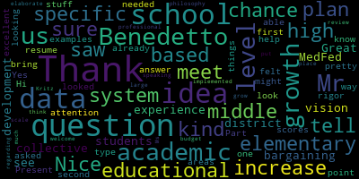
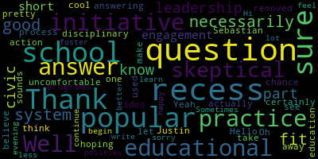

AI-generated transcript of Medford School Committee - Superintendent Interviews - Night 2 - 04/04/18
Back to all transcripts
[Burke]: Meeting of the Medford School Committee will now come to order for the second round of public interviews in our superintendent search. I've been asked by the committee just to explain a few procedures. I believe it's the collectively we will finish our interviews tonight. We will be meeting on Monday, and we will determine whether or not we want to proceed with site visits of the candidates that are selected. Could be all four. It could be limited. We will make that determination on Monday night. With that, we are now going to introduce Dr. Maurice Edouard Vincent.
[SPEAKER_02]: I pledge allegiance to the flag of the United States of America.
[Burke]: for which it stands, one nation, under God, indivisible, with liberty and justice for all. Please call the roll, Ms. Kreatz. I wrote down the roll.
[Kreatz]: Mrs. DiBenedetto.
[DiBenedetto]: Present.
[Kreatz]: Mrs. Kreatz, here. Mrs. Mistone.
[DiBenedetto]: Here.
[Kreatz]: Mr. Ruggiero. Present. Mr. Russo. Present. Mrs. Van de Groot. Present. Mayor Burke.
[Burke]: present, seven present, none absent, if we could all rise and take a moment of silence on the 50th anniversary of the passing of Dr. Martin Luther King. Thank you. Thank you so much. Welcome. Thank you so much for coming tonight. We'd like to give you an opportunity to make an opening statement.
[Edouard-Vincent]: Good evening school committee and members of the community. I thank you for this opportunity to come before you this evening. I consider it a great privilege and honor to come home to Medford, my city, my town of birth. I'm a native of Medford. I was born in Medford at Lawrence Memorial Hospital. I started my education here at the Hervey School. I started my kindergarten experience at the Hervey School and continued at St. Raphael's and continued on to Arlington Catholic. During my education here in Medford, I had an opportunity to have great mentors within the community who were strong educational representatives who really instilled and inspired me to consider education as a career path. I am a first generation Haitian American. And my parents were very hardworking. They both were custodians at Tufts University. And they really taught us the importance of hard work, commitment, and really trying your best to improve your educational outcomes or your life outcomes. And I think coming from that background of hard work and dedication that I went on to college, Wheelock College, and I went into the field of education. I was a teacher. I started as a substitute teacher, then a teacher. I became an assistant principal, a principal, and a network superintendent. And currently I'm an instructional superintendent with Boston Public Schools. So I've been in education for 24 and a half years. And I feel with all of my experience that when this opportunity came to apply for the superintendency of Medford, I really considered it an opportunity to come back home to Medford. And so that brings me here. here today.
[Burke]: Well, we welcome you back home. I think tonight I'm going to start out on this side. Are you ready, Ms. Vander Kloot?
[Van der Kloot]: Hi. I think it would be helpful if we understood a little bit more about your current job capacity. Boston is a little bit unknown to us. And so if you could explain exactly what you do in your current position, that would be extremely helpful.
[Edouard-Vincent]: OK. So in my current role right now, I am an instructional superintendent. I am over a teaching and learning team. And it's TLT 1A. So the combined teaching and learning team consists of 30 schools. And I am responsible for half of that. The focus is K-8 schools. And we have dual language, early childhood schools, elementary K-5 schools, K-6, 6-8, K-8. So there are multiple configurations of the schools that I work with. And from an instructional perspective, I support the schools. So every school is required to have an instructional focus. And we conduct instructional focus reviews. So I support the principals instructionally. I supervise them. I do their evaluations. I support principals if they have any challenges, if they need support for professional development, if there are concerns from families, I will support the schools in that regard. So I would be the first point of contact on an instructional level for schools.
[Van der Kloot]: And I'm not sure if- When you say instructional focus, are you meaning instruction curriculum overall, or are you, is there different instructional methods that differentiate the schools?
[Edouard-Vincent]: So some schools do have different instructional methods that they're using, but based on their data, each school designs or creates an instructional focus. So for some schools, depending on the constituencies that are there based on the results of data, they may say that they're going to focus on increasing rigor. They may be looking at productive struggle. Some schools may have a focus on discourse, student-to-student discourse, teacher-to-student discourse. So they would look at data. Some schools are focusing on writing. So it's individualized to the needs of each respective school, but the focus has to be based on data. So it's not that they just feel like, you know, we're gonna look at student discourse, but there's a reason why. So if they maybe have a high English language learner population, and they want the students to use more academic vocabulary, or the students are still learning how to produce language, then that school could potentially have an instructional focus that deals with discourse and developing discourse and looking at the ratio of student-to-student talk versus teacher-to-student talk. And so when we conduct instructional focus reviews, it's a cross-functional team that goes into the schools and we go into multiple classrooms and we look for evidence of the instructional focus. And so we either see the instructional focus being implemented or we don't see it. And at the end of the instructional focus review, we give feedback to the school. And by giving the school feedback, we can say we saw evidence of your instructional focus, maybe in three out of four areas. And we can be as granular as based on these number of classrooms, this is where we saw evidence, this is where we did not see evidence. And then the schools take that information and they work with their instructional leadership teams to address their instructional focus.
[Van der Kloot]: So tell me about one of the biggest challenges in working in your current position.
[Edouard-Vincent]: So I would say one of the challenges that principals sometimes face when we're looking at the instructional realm is if something were to potentially happen operationally or if something were to happen such as, you know, they're going into conduct a common planning time meeting, but they may be called out to go address a disciplinary challenge. Or they may need to meet with a parent. So sometimes principals will say that there was a conflict and they were pulled away from working on that particular challenge. Another challenge as well sometimes is based on the curriculum or the programming that is at a particular school. Sometimes they may need or would like to have more resources, but there are limited resources. So sometimes that's a challenge that they say, I would like to have more of something.
[Van der Kloot]: But what is your challenge?
[Edouard-Vincent]: So my challenge working with the schools right now is sometimes just balancing the sheer number. So there's no way that I could possibly get to every school every single week. So sometimes a challenge would be trying to manage if I'm going to be on a two-week cycle or a three-week cycle with the school. So depending on the level of the work that I'm doing at the school, I may be able to go to two to three schools a day. So if they have an instructional leadership team meeting before school, then I could start there and then go to two schools and possibly support them during common planning time meeting or planning or doing observational rounds. That's my own personal challenge, is trying to get to more schools and be value add. So not just go through as a drive-by, but go through to actually support the instruction that's happening.
[Burke]: OK. Thank you. Thank you very much. Mr. Russo.
[Ruseau]: Hello again. Well, with all these schools, I'm sure, I'm hoping you can have an answer to this question. What is a popular educational initiative or practice of which you're skeptical and why?
[Edouard-Vincent]: Of which I'm skeptical. A skeptical practice.
[Ruseau]: Well, actually, one that's popular, but for which that doesn't make it necessarily a good idea. And I'm sure that answering this is uncomfortable.
[Edouard-Vincent]: That's the point. I'm trying to just think through my portfolio of schools. and I want to answer the question, but I would say, um, I have some skepticism with, I was thinking about how some of our sciences are being implemented. Um, and my skeptic, not with the content of science, but more skepticism with the frequency of implementation, um, that, If you're not able, like that's one of the things that in my own mind I'm thinking about. If you're not able to dedicate enough time to the instruction of science, I'm skeptical that I'm going to see outcomes move significantly. And that is something where I feel that we are struggling because science is an area that has been grossly neglected. as a district and even within the TLT, within the teaching and learning team, that it's an area where people struggle to find time to fully implement it. And I'm skeptical about if we're not able to create the time without robbing Peter to pay Paul, taking away from history, taking away from social studies. So it's like they feel it's almost like I have to implement one or I implement the other, but it can never be implemented well. And I'm skeptical about seeing the needle actually move if we're not able to come up with a real solution. I hope I answered your question.
[Burke]: Could you describe your management style and how you feel you collaborate with key stakeholders?
[Edouard-Vincent]: I feel that I am a distributive leader. My management style is one where I'm collaborative. I work very well in teams. I believe in delegating and building and working with the team's strengths. I don't believe that I'm the keeper of all the knowledge. I believe that everyone who's part of the team or working with me has something valuable to contribute, and through their contributions, we can be the most effective team.
[Burke]: So if we were to consider the superintendent the number one of the school system, what type of person would be your number two?
[Edouard-Vincent]: A number two person who would be working with me would have, I feel, a complementary skill set. So I am, you know, I feel I'm a creative, a creative thinker. I think very quickly. I move very quickly. So if I had someone who had a complementary skill set that they also, too, would be able to move quickly. But one thing that I would not do specifically would be, like, I am not one to necessarily go into graphs and always do a punch list. So I feel that having someone with a complementary skill set would be someone who would work well with having a punch list and saying, okay, these are all the things we said that we were going to do. Let's just cross-reference to see if we've accomplished those things.
[Burke]: So would you be part of the follow-up on the punch list?
[Edouard-Vincent]: Yes, always. I would go back to follow-up to make sure that we get to the end goal. By style, I'm not a micromanager. I believe in delegating, trusting that everyone who's part of the team has the skill set and the ability to do what they're being asked. And I would also focus on creating the conditions where there was definitely relational trust, so that if you encounter difficulty, you would be able to say, I'm stuck, I need help, that the person would communicate that. So when it came time to report back on where we were with this particular product or what we were trying to meet, that I would be able to then say, OK, let's see how we can strategize. Let's see if we can bring in an additional voice to help get to the deadline.
[Burke]: Very good. Thank you. Ms. Mostong.
[Mustone]: So this is two parts. One is, what do you think is the primary function of a superintendent nowadays with so many shifting educational requirements? And how would you implement your first steps for this priority if you were to be our superintendent?
[Edouard-Vincent]: So as superintendent, the primary function would be to ensure that all schools are fully functioning, that you have an instructional leader in every building, that every building has teachers and staff just to be in compliance from a central office level to make sure that you have all central office representatives there so that the central office function of the school connecting to the mayor's office and the other city departments, that there's communication going back and forth between all of those departments. So the superintendent has to be the one who's managing what's happening at the schools and managing what's happening at Central in regards to, and communicating with the mayor's office and realizing that we're not an entity unto ourselves, but that we have other parts of the city that work in collaboration with us. So I feel that that would be the primary role, and ensuring, again, whoever the team of instructional leaders are that are at the schools, that they have access to me as the superintendent come voice concerns, say, you know, come celebrate. These are bright spots that we have happening in our schools. So to have that open communication line to ensure that the students are being educated at the highest levels. And you said the second part.
[Mustone]: First steps. So if you were to be superintendent, what do you think your first steps would be in the new role?
[Edouard-Vincent]: So if I was chosen to be the superintendent as part of my entry, my first step would have to be to listen and listen with both ears. I would need to listen. I would need to have an opportunity to learn what is the context of Medford right now, what's happening in Medford, and once I gather that information, once I listen, I learn, and I would be learning not only from the schools, but from other stakeholders, from parents, from community partners. Once I gather that information and I'm able to really look more closely at all the data that is available, then I would be better poised to make a decision to say, okay, based on what I've listened to and heard, based on what the stakeholders have shared with me, based on all of that data, this is how I would like to move forward and lead. So I feel like as a superintendent, I cannot just come and jump and say, this is what I'm going to do. I need to know what's happening, what is working, what we have room to maybe make some slight shifts, and then move forward from there.
[Kreatz]: Thank you. You're welcome. Thank you. Ms. Kress. Hello. Hi, Dr. Vincent. Hi. OK. So I have this one question has three parts, if you want to write it down. Yes. I know the other night it was a long question, so they wrote it down. So I'll read it slowly. So as you know, Medford Public Schools has 18 approved vocational CTE programs. How would you enhance the programs already in place? What is needed to remain on the cutting edge of technology? Where do you see the programs in three to five years?
[Edouard-Vincent]: I can repeat if you need me to for anything. First and foremost, I want to say that I know the merger between the general high school and the vocational side of the high school. It is a great idea that the schools have merged, but I also know that there was some For some people, there were some pain points because you felt like you were giving up something in the merging of the two schools. But in the end, you end up making a stronger district. Right now, with CTE programming, and I will also call it project-based learning, when you look at the programming that is in place and how the school district can advance in three to five years. If we are able to fine tune and have master students that at the end of their time at Medford High School, that they would be able to, one, be employed and or for career and or college path, leave with official certifications, that will allow them to be job ready. I feel that that is what needs to happen and to look at the pathway of also adding college level courses. at the high school level as an extension so that students who are graduating, depending on their levels and abilities, they would be able to be graduating with college credits. So it does require strict implementation of the Mass Corps, making sure that they get all the official basics. And then with their specialty classes, where they can continue to have placements, internship placements, but to build upon that and add the college partnerships. Bunker Hill, I know Tufts is nearby. We possibly, I'm just thinking about schools that you could tap into in the three to five year range to go with that specific pathway where students would be finishing high school. with college credits. I feel that that would be the next iteration or the next level of CTE so that, yes, they are college and career ready, and some students have already achieved college credits at the high school level, and it can be done. In terms of technology, technology is a must in terms of where we are moving in order to be competitive with the rest of the world. Technology, it's important to have, but if you put technology in the hands of the students, you have to make sure that as they're using the technology, that appropriate professional development and training has also happened for the teachers. And so in one of my schools that was on my portfolio received one-to-one iPads. for all the students. The students, as we know, are using their phones, are using technology all the time to really advance the work that they're doing. students have grass technology at a faster rate than some of the teachers. And so I think in order to use technology, it should be used, it should be integrated, but it should not just be an add-on, such as type up your notes in a Google Doc and send your notes to me. But really having students doing research, embedding links, doing presentations, really taking technology to a level where they're able to present portfolios to display their work that they've had for over the course of the year or in increments, incremental sessions over the year.
[Kreatz]: Thank you very much.
[DiBenedetto]: Mr. Benedetto. Hi. Nice to meet you. Thank you. My first question is pretty specific. I'm sure you looked at some of our data. And what is your plan to increase the academic growth at each level of our educational system? So our elementary, middle, and high school.
[Edouard-Vincent]: And you're saying to improve academic data?
[DiBenedetto]: Yes. To increase academic scores or rigor in any way. Like if you saw by looking at our data areas that you felt that needed growth and attention at this point, and what kind of ideas do you have to help us? I saw in your resume that you were able to bring schools up to level one. And just the type of things, based on our data, if you had a chance to look at that, if you had any specific ideas or examples.
[Edouard-Vincent]: So I did spend quite a bit of time looking at your state data on the DESE site. And if I could start with some of the bright spots that I had noted. And then I can go into what some of my wonderings were. And so I can share that with the team. So bright spots, I started with the high school. that 91% of your students were proficient or higher on the grade 10 ELA with student growth percentile of 70, which is outstanding. 40 to 60 is the range. 51 is what you're looking for. And high school ELA SGP is 70. The SGP is a student growth percentile. And what it is is taking a student from one year, that cohort, and measuring that same student a year later with other students who performed at the same level as that child. So it's not across the entire state. So sometimes when you look at SGP, people may say, oh, it's Medford Public Schools. No, it's across the entire state of Massachusetts. So that's something, a tremendous bright spot and something to applaud. At grade 10 math, 77% of your students scored at proficient or higher with the SGP of 61. And again, the range being 40 to 60, that's where the state designates it as the regular expected growth. So 61 is above that. I looked also at your grade 10 ELA, where students scored a two or higher. And you had 85% of your students, of the 344 students, scoring and at the state, at that particular number, the state was at 86%, so you were neck and neck with the state. For your AP test scores, students scoring a 3 or higher, you were at 84.5, whereas the state was only at 65.7. So that's really something to applaud your AP teachers. and what's happening there. And so with our Mass Corps in 2017, you had 100% versus the state at 77.4%. And so you also did well with attendance at 94.4% student absence. Your days were, although Attendance and absences is something we want to work with. Average student absences were nine days. The state was at 9.5 for Medford and 11.6 for the state. Your in-school suspensions were lower than the state at zero. Your out-of-school suspensions were 5.3. The state was at 4.2, but still It's a very respectable number. So those were some of the areas that had really jumped out at me as tremendous bright spots to be proud of as a district. Some of the areas where I had wonderings was on the open response in high schools, where we did have a tour above. I was wondering about that, I was wondering about Introductory physics of the 211 students who were taking that test and there was like a 47% I looked at all of our students and looked at, for all students, reading, writing, and math, and noticed that for special ed students, that that was one of the areas where we had a wider gap. And so I also wonder about our English language learners. and how our English language learners are, they're not graduating at the same rate as your gen ed students. So it's almost like one out of every two, or 50%, 55% graduation rate, so that was something that kind of had me wondering. So at the elementary levels, we have, several level two schools. As a district, we are a solid level two district. In 2015, that was the only year where there was a dip down to a level three for one year. But from 2012, 2013, 2014, 2016, we brought it back up and became a level two district. 2017, the district has no official level until the state gives the official new designations. So as I think about the elementary levels where I know, when I think about English language learners and I think about students with disabilities, if we do not have a strong foundation, then you're not going to be able to stand tall and stand proud. So as I applaud the high school ELA scores and the math scores, I feel that something solid and strong is happening in terms of English instruction at the upper grades. However, when they get to middle school, I am wondering what is happening with our students with disabilities and our English language learners, and specifically what instructional strategies are being used for those students. So when I was leading a school and we realized that we needed to have a sheltered English immersion program, an SCI program for our English language learners, we drastically changed how we were teaching. So I believe in having a growth mindset and not looking at English language learners or students with disabilities from a deficit perspective. And so look at their ability, English language learners, to speak more than one language. Myself, I can speak another language. They're actually using more parts of the brain to be able to communicate. in two different languages, and sometimes to even be able to read and write in another language. But as you're acquiring English, there is a silent phase that is five to seven years. So if you're getting English language learners at the elementary levels, coming in at first, second, third grade, you have to give them five to seven years before they are actually English dominant. So that brings you to the end of middle school. And so when you get to the end of middle school, going into high school, that's when you're able to see a lot of students that were Ls, they end up flapping, and you end up saying, wow, they're actually performing on par. So it's that silent phase where, like sponges, they are taking in the other language and processing it. Students who speak another language, they originally pick up social English very quickly. but they don't pick up the academic language. And it's the academic language that is inside all of the content, all of the books, everything that's being taught. So those are some of the strategies that I would recommend using at the elementary levels, using cognates. Clustering languages could be a possibility depending on what the languages are. So if you use some of the Romance languages, whether it could be French or Spanish, or Portuguese or Italian, taking some languages that have similar bases, clustering them and teaching them so that when you're using a specific word in English that has a cognate in their native language, they're able to make the connection very quickly. And so by doing that, when you chunk the information, you build background knowledge, those were some of the things that I did working with large populations of students that were ELLs. For students with disabilities, that same strategy works. The best practices that work for students with disabilities also work for ELLs. increasing visuals, using non-traditional methods of instruction. So do not talk at the children all day in lecture style. That's not gonna work. Give them opportunities to listen. Books on tape, let them listen auditorily. Let them have opportunities to speak. Let them have opportunities to practice the language, make mistakes with the language. Give them opportunities to turn and talk. And again, that gives them that opportunity to build the discourse and become stronger students. So I feel like if there's a stronger base at the elementary level, when they get to middle school and you're teaching specific by-content areas, the children are older, they're more mature, they're able to take on more responsibility, so that by the time they are at high school, they are young adults, they are able to kind of spread their wings and really fly and succeed.
[DiBenedetto]: Thank you, that's an excellent answer to my question. You know your stuff.
[Ruggiero]: Good evening, Doctor. You started as the instructional superintendent in Boston Public Schools in 2015, is that correct?
[Edouard-Vincent]: Yes. 2015, I started actually as a network superintendent, and so under that structure, it was a slightly different structure. At that time, as a network superintendent, I was responsible for both instructional and operational needs of a building, so I was the point person for both sides of the house, and I would report directly to the superintendent. Now, as an instructional superintendent, I have a counterpart, who is operational superintendent, and the two of us work collaboratively. I see.
[Ruggiero]: I see. So while I was researching the Boston public school system, I came across a surprising trend that was talked about in Boston Magazine. When you started in 2015, Boston Magazine stated that your district spent about $17,000, $17,500 per pupil, and it ranked your district 116 out of 125 area schools. Despite spending about $2,000 more per pupil since 2015, the ranking over your tenure actually slipped, and now some educational experts rank the Boston Public Schools among the five lower ones. I wanted you to comment on that, and I was wondering, what do you think that Boston Magazine might have missed over the couple of years that you've been working in the Boston Public School system?
[Edouard-Vincent]: To answer that question, when I think about the outcomes of the students going down, I would have to really attribute it to there's a lot of trauma in Boston. And I have to say, honestly, social emotional learning, there's a body of research and a lot of people are realizing right now that social emotional learning does impact how students perform. And I do feel, being a large urban district, that the amount of trauma that many students face and encounter between shootings near schools, shootings when students are at recess, violence on the streets, that that does have an impact in terms of when it gets to the schools. And so some schools where outcomes have actually dropped. If you were to speak to principals, the instructional leaders of the schools, they would say there has been a significant increase in the amount of trauma that they're experiencing. High poverty, high free and reduced lunch, English language learners, newcomers to the country. There are a lot of factors. I don't want it to sound like I'm making an excuse, but a lot of the schools are trauma-charged, and I don't say that lightly. That's a reality. And so how teachers have to teach the children now, they have to really use a lot of different strategies. They have to take care of the child, the whole child first, I would say. They have to look at, is this child ready to do the work that I'm gonna put before them, or does this child need some other kind of intervention before I can even start teaching the academic content? So I would say, I know the Boston Magazine, they would write their piece based on strictly numbers, what's black and white and what's factual. But what they aren't able to see is what's happening in the schools and what the students are encountering, what they are dealing with, and that they're coming to school every day. And they're coming to learn. They're coming to learn. They want to learn. But there are a lot of challenges and obstacles that they have to overcome. So that's what I feel has led to that decline. And so we are back at the drawing board once again, trying to figure out, okay, what's the next strategy that we need to put in place? And so now we are really, really focusing on social-emotional learning.
[Ruggiero]: Yeah, when I was a teacher in Houston, before that I mostly did private schools, so my experience was more of children of affluence. And then when I started teaching in Houston, it was sort of that big transition of children that had a lot of trauma, a lot of poverty. Thankfully, I had a number of really great principals that sort of helped me adjust my teaching style, which needed adjustment. I wondered, how would you, how do you help teachers like myself, or teachers that don't necessarily come from high trauma, high poverty environments, and how would you educate them to help integrate that into their teaching style?
[Edouard-Vincent]: So first and foremost, I would want to ensure that all teachers have a growth mindset and believe first and foremost that the children actually can learn. because sometimes people have a deficit mindset and they say, well, they don't speak English or they have a disability. They're not going to be able to get this anyway. I'm not going to focus on them. And so I think the first piece would be to make sure that they have a growth mindset. We are teaching children and we all make mistakes even as adults. So as a teacher, I love teaching, even working with teachers, giving teachers feedback. it's important to be able to observe the practice, observe the work, go in, see what are the teachers doing, what's happening, are you using strategies, are you using sheltered instruction, I think of the sheltered instruction observation protocol, which talks about allowing additional wait time, using the visuals, speaking at, not speaking at a rapid rate of speed, so that the students can actually hear and catch the words of what you're saying so they're able to piece it together and make sense. So in terms of helping a teacher, if a teacher came from a parochial school or a private school or from a school of affluence and they're teaching in a high-need school, they're still teaching children. It's not like you're teaching children in one location and you're teaching puppies in another. You are teaching children. And so I believe that all children can be taught and that it's the mindset and a willingness to learn, and that everyone can grow together.
[Ruggiero]: And finally on this topic, I sort of want to take a case study real quick. I was reading through the Department of Education, the 2015-2016 reports, and it was showing how minority children and children with disabilities are often disciplined at higher rates with more severe outcomes. So I would like to sort of create a case study, and I would like you to imagine a teacher that you notice a similar trend, that for similar discipline situations, they tend to be disciplining children who are minorities and children in poverty with disabilities at a more severe rate. How would you adjust that teacher's style, and how would you communicate the problem to that teacher?
[Edouard-Vincent]: Sometimes teachers aren't even aware. In Boston, it's a real issue. It is a gap. that if you walk into rooms with students, sub-separate rooms with students with disabilities, all you will see is black and brown. And on top of that, all you'll usually see are males. You might see one girl. And so it's something that has happened, and I've seen it happen. But sometimes teachers don't realize the data. I'm gonna go back to that. When I was an assistant principal, and I took over for an interim piece of time. In a two week period at the school, I processed 250 discipline incident reports in 10 days. And I went to the principal and said, is this normal? Because I was a classroom teacher and I came out to cover a leave. And he said, this is not normal. And so he said, disaggregate the data. And when I went through the 250 incident reports, 50 incident reports were from one classroom. And so he called the staff meeting, and at the staff meeting, we presented the data. So I believe in letting the data do the talking. And so the data was to the staff, We had 250 incident reports in a 10-day time frame. Once the entire school body heard that, everyone was surprised. And we did not say any names, but we did say 50 incident reports came from one classroom. Eight came from another classroom. And when they realized that these 250 incident reports were generated from a very small segment of the school community, and it was made public, without any names, the following week, there was a miraculous improvement, and we had 50 incident reports. And again, this was a high-need school, with probably 600 students. And at that time we did have a special set of students that had behavioral challenges, so we had a sub-separate classroom for students with behavioral challenges. And so we brought the incident reports down to 50, which was the normal For that size school, that was a normal expectation. And again, the incident report was just so you could know what was happening. So thinking about what you're saying, I would say the same thing, presenting the data. Present the data to the principals, present the data. Is there a particular school that has the highest number of discipline referrals? and or special ed referrals? And if so, let's investigate why. And let's investigate who. Is it a school that has a special needs population of students that have behavioral concerns? Is it a school that has high English language learner populations? What are the challenges at that particular school? And then unpack it from there. This is what the data says. Can you help me understand what the data says? Now let's come up with an action plan to address this, because it's not acceptable.
[Ruseau]: Thank you.
[Burke]: Okay. Mr. Russo.
[Ruseau]: How does recess fit into a school system under your leadership?
[Edouard-Vincent]: Recess. I am an advocate of recess. I believe children need to get out and stretch and play and have fresh air. So at the elementary levels, it should be a non-negotiable. And for middle schools, I'm not sure if at the middle school level here, children do have recess, but I believe in children being able to have time to go outside, to stretch, to play, to run. It's good for their heart. It's good for them to be able to come back into the classroom after lunch and be able to learn for the second half of the day. So I am an advocate of recess, and I think it's important just for helping kids to stay healthy, giving them an opportunity to socialize outside of the instructional day, as opposed to wanting to socialize during instructional time in the classroom.
[Ruseau]: And do you think that recess should ever be used, should ever be removed as part of disciplinary action?
[Edouard-Vincent]: So recess as punishment is what you're saying.
[Ruseau]: Should you ever take away recess?
[Edouard-Vincent]: Honestly, I personally believe that we really should not use recess as punishment. That we should keep it separate. But you also have to look at each situation respectively and be able to say, for example, Is it a child that's physically assaulting other children at recess? So now at the end of recess, five children are going to the nurse to say that I was kicked on the playground or I was physically assaulted. Then in that particular situation, I would say recess is an opportunity for children to play, to socialize, and have a good time. For this particular incident, you used recess in the wrong way. You made a poor decision. You physically hurt some of your classmates. So today, you have to spend recess with me or whoever the designee, I mean, I wouldn't be at the school, but the school leader, the principal could say that. And so, but personally, I believe children should be able to have recess, but if there is an extenuating circumstance and they feel that recess needs to be taken away, it should be taken away for a short period of time. You should not say, I'm taking away recess for a month, like when you ground your child and say, you know, no TB for two weeks. No, I don't believe in something like that. Thank you.
[Burke]: Ms. Van der Kloot. Dr. Vincent.
[Van der Kloot]: We've spoken about some of your successes, but I want to hear how you've been tested. So could you speak about, I'll say, two occasions where you did not succeed in something or where you actually failed and what you learned from it?
[Edouard-Vincent]: I'm thinking.
[Van der Kloot]: It could be like an implementation of a program not going well or an interaction with a student's family for something, whatever.
[Edouard-Vincent]: I think I'm biased. I'm just thinking of so many bright spots right now. Something that did not go well. I'm thinking about one of the times a schedule change. One of the times I, as a principal, I ended up changing the schedule. And I took some liberties. in changing the schedule. And I wanted to move to a 60-minute block. But according to the contract, it should have been 48 minutes. And so myself, 48 minutes, I was like, 48, 50, 60, no big deal. But what I was thinking was when I changed to the 60-minute block schedule from the 48 minutes, the teachers ended up with a 60-minute planning period as well as opposed to the 48 minutes. But for the specialists that were teaching during the planning period, it was a 60-minute block. And so there was tension. because some people loved having the 60 minutes because they felt like you could actually do more during that block of time, but because it was in violation of the contract, we had to go back to the 48 minutes to respect the contract. And so I had taken that liberty, and then afterwards there was more discussion, but that was one of the times where I was eager and I was like, okay, this is the new schedule. And I had to go back and say, I'm sorry, this couldn't work. We have to go back to 48 minutes. So we did go back to the 48-minute schedule.
[Van der Kloot]: Okay. Good. Thank you. Can I ask another one? Sure. Okay. So we've touched a little bit on this. You mentioned this. One of the things that students are presenting with is increasing levels of anxiety. How do you balance the emotional needs of the students while maintaining academic rigor? And can you give me any specific examples how you've handled that in your schools?
[Edouard-Vincent]: So balancing academic rigor with the social emotional needs of the child. Currently, I have several schools that have integrated sensory rooms. And so in these rooms, it's a space within the school where there are squishies, there are beanbags, there could be balls, because students do have, go into crisis or do have moments of difficulty where they're not functioning in the classroom. So for schools that have been able to design this sensory space, we've been using that as an alternative, one school calls it an alternative learning environment. It's not something that is used for the entire day, but it's something that's used for the student to have an opportunity to de-escalate and to be able to return to the classroom to participate in their learning. So that would be something that I would definitely say I would advocate for if the school has the physical ability, the physical space to create this alternative learning environment for students that may have severe anxiety, may be dealing with trauma, or something that is overwhelming them, that's preventing them from functioning within the classroom setting. At the same time, you would need to have personnel, and again, the staffing for that, whether it's a paraprofessional, or whether you have itinerants, sometimes, you know, looking at the flexible scheduling, so if you were to have an OT or a PT person who has a free period, and you could say during this time of the day, I will be in the alternative learning space, so that sometimes you can even say to children, you can't go to the space right now, one o'clock you'll be able to go to this space and have that opportunity. I've also seen low tech things such as just having a tent, a small little tent in a classroom and some classrooms just have it labeled like cool down area. It was like camp cool down and so sometimes just having an area that you have sensory tools, things that they can squeeze or touch or maybe color. to be intentional about having a toolkit. Another school has little shoeboxes that are social-emotional. They're like little toolboxes that have social-emotional tools within them. So I feel like the way to address it is to address it proactively, not waiting for something to happen, but already have it in place so that when a child is in crisis, you have a plan of action, and then that will allow you, the teacher, to be able to teach the rest of the class or the rest of the students. If, as a teacher, you get bogged down too much with what's happening social-emotionally with a child, then the instruction is not moving forward. So even with trauma, traumatic incidents or students that are dealing with severe anxiety, you cannot water down the content. You cannot water down your instruction because it might be two students, it could be three students in the classroom, but what about the remaining students that aren't having that issue? So I feel you have to have a plan in place, a robust plan to address social emotional needs, but at the same time balance that with this is the content, this is what I'm teaching. And is what I'm teaching engaging? Because I feel like what's being taught also needs to be cognitively demanding and engaging for the students so that they want to do the work. Do you feel that I responded to your question? Thank you.
[Burke]: Could you describe your direct follow-up, Paul? A follow-up?
[Ruseau]: No, but when you get a chance, I have a question from Sebastian and from Justin. Oh, certainly.
[Burke]: You can throw it in. We have a question from our, we have two student reps. You met Justin. Yes, I did meet Justin. They're both visiting with Chief Justice Breyer this evening at Tufts. That seems kind of boring. They will be here later. I'm like, wait, really?
[Ruseau]: Yeah, I know. That sounds pretty cool. So let's see here. Do you believe that civic engagement should be a part of the education process? And if so, what programs or policies would you continue or begin to foster civic engagement? And if not, why?
[Burke]: Put her on FaceTime, send her.
[Ruseau]: This is a lot better, I know, sorry. I didn't write the question, so.
[Edouard-Vincent]: So, no, civic engagement, yes, I believe strongly in civic engagement, especially at the high school levels where they are getting ready to vote at the age of 18. It's very important to educate and inform children and students, young adults, how to be responsible citizens. and what their rights are. So I would be an advocate of promoting opportunities for students to engage in that. And there are debate leagues and all of those things where students have those opportunities, but also, I would say, creating opportunities, creating forums here at the schools to have discussions. on issues that could be, you know, in the media right now, what's happening, almost kind of like, you know, what's social studies, what is currently happening in our world. So providing students with those opportunities to talk about it, to debate about it, and to engage in discussions and set it up. You can set it up in a formal structure. And I would work very collaboratively with the history team, the history teachers. to say let's try to make this a more formalized process or a frequent process so the students are informed.
[Burke]: If I could just follow up a little bit. Obviously, Boston was at the center of the walkout. Medford joined in. We missed the national day like every other community around here with the snow and the kids still went into town. Could you describe what role you played in figuring out the safety nets for the students that were going to walk out on any given Wednesday and or that particular one?
[Edouard-Vincent]: So specifically right now that baton was officially handed over to the operational side of the house. So the operational superintendents support that, but what we've done in the past with the walkouts that the students have participated in is we have administrators on the key train stations at the checkpoints, so if we know, we usually know in advance which schools are they walking out from, which particular high schools, and myself, I went down to City Hall, so all of central office was kind of deployed, And so we went to, so there were definitely a lot of adults there. The students were allowed to go to, you know, to actively engage in the process, but there were adults there. Within the train stations, transit police were notified. We knew they were on the T. School police were notified. So we did have strategic checkpoints. Safety was aware, like every, all hands on deck. to ensure that students remain safe. And for the most part, they do remain safe. Sometimes they end up getting into a scuffle, but there are enough adults there to intervene. So even though it does happen, we have deployed the other adult staff to be able to support the process.
[Burke]: Did you have some students that chose not to participate? And what did you have in place for them instructionally? if they remained at school?
[Edouard-Vincent]: Yes, the students that did not participate in the walkout remained at school and they were taught. So yeah, instruction always continued. So for students that were not doing it, they continued to be taught. And sometimes they may have them, some schools had them go to an auditorium, so they did kind of an assembly for the students that did not go, but just to acknowledge that it was happening. And of course, we strongly encourage them to stay in school and that they should be in school during the school day. But again, that's not what happened. So we had to go to plan B. Thank you.
[Burke]: Well, that obviously was a result of a threat assessment that was performed pretty much in all of our school systems. What direct role have you played in threat assessments and crisis management in the Boston schools?
[Edouard-Vincent]: With schools, I've been in schools when we've gone into safe mode. That's been several times since I was in one of the highest needs area. So once that does happen when you're physically at a school, everyone is trained. They make the announcement, we know what's happening. We have a system called Crisis Go in Boston where it's an app and it goes to all key central office administrators. So it lets us know if something is happening at one of the 125 schools at any given moment. And so we have a robust safety team. So when that happens, they are deployed and they will head over to the school. And depending on whose teaching and learning team it's within, then that respective instructional superintendent and our operational superintendent will go to provide support. at that location. So I am not necessarily the one who is saying, okay, I'm calling the police. But if I'm notified first, I will talk with the operational superintendent, pass the baton on, and we start the ball rolling from there. And then it goes out on crisis go. Do you play a role in the training? In the training? I do not directly train. I've participated in trainings, but I am not. We bring in professionals, we bring in the police, the police are You know, we have designated Boston police that are school police officers. And so they are all hands on deck, you know, deeply involved. So some trainings will happen at central office or trainings will happen at specific school sites. If there's a particular crisis going on, then we realize, okay, let's do it here at this place. So trainings are available, and support personnel are available. And we partner closely with school police and Boston police, because there are Boston police that are designated to BPS. Very good.
[Burke]: Thank you. Ms. Mastone.
[Mustone]: So another big concern of parents that I received emails is about the upkeep and maintenance of our school buildings. So do you have experience with budget for upkeep and maintenance, or is that something that you see in your current BPS? Is that something you've dealt with before with your schools that you are the superintendent of?
[Edouard-Vincent]: So for upkeep and maintenance, we do have a large... I know it sounds like... We have a lot of teams. So we do have... We have a grounds crew and we have maintenance crew. So depending, you know, my first school was on three city blocks, so depending on the physical location and layout of the school, that would determine how much support or how little support you receive. But the maintenance of schools, like the lawn being cut or flowers or mulch, snow shovel removal, Custodians help with that. Materials are delivered. If stuff isn't delivered, we call the supervisors right away to say this needs to be done. We have a lot of outdoor classrooms. So now that the winter, the snow is finally melting away, so the outdoor classrooms will need, so the grounds crew will come and they will prune and they'll get the outdoor classrooms back up to par so that the students can go out and use them. So in terms of looking at it from a specific budgetary perspective, it's already embedded within the school budget.
[Mustone]: So is there a line budget item that says grounds?
[Edouard-Vincent]: Not on the specific school one. It's just embedded within the district budget. Got it. So you're not going to see it say that. But if something needs to be done, or if a building is not clean, when I go into a building, or if a parent ends up saying the girls' bathroom or the boys' bathroom, The boys' bathroom sometimes is not the cleanest. And I just say that because they like to play there. And so sometimes the reports will come back and it will be like, this needs to be done. So we also, if I'm called in and we go into the boys' bathroom and really see like, you know what, we can't wait until after third lunch for the boys' bathroom to be cleaned, it needs to be cleaned after every lunch, then that could be something that I would speak to the custodial supervisor about to say like, we really need for maintenance purposes and for health cleanliness purposes, we need a more frequent pass over the restrooms at lunchtime. So I have that flexibility and the school leaders have that flexibility to be able to say that. Because it's about safety first, but it's also about the health and sanitation. You don't want children using dirty facilities. and you don't want them having health problems because they don't want to use the facilities. So that is a serious need and it should definitely be addressed.
[Mustone]: And I know you've had many different roles. Have you had in one of your roles the responsibility to write a whole school budget and what was that like for you or how did it play out?
[Edouard-Vincent]: So our budgets in Boston are based on a weighted student funding. So the budget process is I've worked with budgets and I work with all of my schools on their budget. We have a budget collaborative process, a very long elaborative process. Elaborate, elaborate, I'm sorry. But what I can say is in terms of working with the budgets, the majority of the budget is normally consumed by human resources, all of the people. By the time you pay for people benefits, you are left with a very small amount of money, grant money that may be targeted for ELLs, grant money targeted for students with disabilities, and there's a very small amount of money that you're left with that you have wiggle room. But even with that amount of money that you are left with, I do work with principals and talking with them to say, how are you gonna be strategic about the use of these funds? Sometimes they allocate, it could be 10,000 towards stipends, because they're planning on doing professional development or special projects with teachers, a certain amount of money from that pool towards field trips. So there were certain things that they allocate up front, and then whatever's left over, they pursue partnerships with community partners.
[Mustone]: All right. Well, I guess could I just follow up with that, just because you had mentioned community partners. Can you speak about partnerships that you've created or that you would like to see created in Medford that aren't currently here?
[Edouard-Vincent]: I know that there are partnerships already with some of the colleges and universities, with Tufts and I believe Harvard. I would like to add the community colleges. I am seriously interested in looking at what I had said earlier about the early college credit for students that are capable to complete the required Mass Corps and have time to be able to push themselves in that area. So I would definitely want to see college partnerships. And for the community, I would definitely be interested in just seeing how we could have other community partners support the school, whether it was with resources. I'm thinking of one of my schools that is generously, receives a lot of generous funds from the New Market Foundation, and so they provide that school, they've given them three sets of, three classroom sets of technology, Chromebooks, and so we do have a lot of schools that are slowly building up their, technology, and so that would be one way to work with community partners that if they're not able to come into the schools as a resource to volunteer and to support, but to be able to support an initiative that is taking place at the school to enhance the school. Because if you can have a partner help provide with technology, then that would be savings for the school.
[Burke]: Just as a follow-up, in your application you listed a $2.3 million grant from the O'Shaughnessy Foundation. Is that similar to the New Market or is that another one?
[Edouard-Vincent]: The O'Shaughnessy Foundation was a specific grant which was targeted to work with some of our lowest need schools and it brought in coaching and support to those particular schools. So, like pursuing grants, whether it's Nellie Mae or other foundations to pursue monies to supplement what is here at the district, I definitely would be interested in doing that. The New Market Group Foundation, the business group, they support a cluster of schools that are located within a one-mile radius of where they are physically located. And so it's a group of businesses that contribute as a collective, and then they say to the principal, what would you like from us this year? And so I'm saying if there could be an equivalent in Medford to possibly have a group of businesses that work together and say, would you be willing to either adopt a particular school and see what it is, a need that the school may have.
[Burke]: Very good. Thank you. Ms. Koretz.
[Kreatz]: Hello. Hi, Doctor. So as you know, this is another vocational question. So how would you work with the school administration to continue to promote the career technical education in Medford, increase the enrollment, and keeping the kids coming to Medford vocational schools.
[Edouard-Vincent]: So I believe strongly in marketing, and I also believe strongly in communicating. So as we now have this comprehensive high school that is offering so much, we need to reach back to the middle schools. And even in upper elementary, to start doing an exploratory, I would say at fourth and fifth grades, to start saying to them, do you know when you get to high school? These are all the options that are available to you. Start generating that excitement at the elementary level so that as they work their way up, they're thinking about it and saying, what is it that I would be good at? What is it that I could do? Because this is going to be offered to them. And again, once they get to the high school, they're going to have all of these options. but sometimes it's overwhelming, it's too much, so you need to bring it back earlier. And maybe in middle school, have the middle schoolers come, sixth grade, seventh grade, eighth grade, have them come on a field trip, have them come, do an exploration just to think about it, see what it looks like. We do something in Boston, we did like a science week where kids did hands-on science, Maybe to take that as an opportunity to go to the middle schools and give them, maybe it doesn't need to be a full week, but to give them an opportunity to come to the high school and spend maybe two days. Give them time. They could still have their regular grade level work. but give them time to explore, actual hands-on experience to explore some of the options. So then it won't seem like a mystery. Now it's going to be like, wow, I want to do this, or I think I'm interested. And so they'll have options. I think they'll have greater options in front of them. That would be my recommendation. Thank you very much.
[DiBenedetto]: Mr. Benedetto. Thank you. Part of my question was already asked, but could you tell me any experience you might have with collective bargaining?
[Edouard-Vincent]: So with collective bargaining, I have not been on an official collective bargaining team. I have been one of the contributors to the collective bargaining. We do have an office of labor relations where they head up what happens with collective bargaining and the office of human capital. And then they ask instructional superintendents, operational superintendents across section, including principals, they will ask us to contribute to what it is that they're going to be presenting as the negotiations come closer. So if there are things that, you know, you look at in a particular contract and you end up saying, you know, this is something that we would recommend, they have to also look at what is the cost going to be because you can't, you know, break the bank as it is. We have a $1.1 billion budget and it doesn't seem to be going down. And so in negotiations, it's millions and millions of dollars that end up going to the cost of living increase. And so that's something that has to be taken into consideration. So for collective bargaining, I have not been on the teams, but I've contributed to the work that has been done.
[DiBenedetto]: Great. My second question is professional development. just your philosophy on it and how it's implemented where you are, if you have any ideas for our school district.
[Edouard-Vincent]: So I believe in professional development. We also call it, refer to it as professional learning. We have to keep in mind that we're teaching adults and so adults don't like to be spoken to or spoken at. especially teachers. So we have made a really big attempt to break down our professional learning into smaller learning communities. So we do have professional learning communities right now where they are made up of six to 10 principals in each professional learning community and we rotate The schools that we go to, because it's a reasonable number, I work with one middle school grouping, and I also work, I have one larger group, which is the 15 early childhood schools that are within the district. And so for professional learning, we make sure that it's relevant and appropriate to the age that the children are being taught. And so the professional learning communities, that is how we have been doing the work, in small clustered groupings. But I do believe professional learning should involve some kind of an anchor text, reading, articles, videos, opportunities for principals to be able to turn and talk, share, and learn from one another. So have an opportunity to present their own case studies, and say, this is a challenge I'm working with, and use the collective minds of the group to tackle their challenge. So it should be about their learning, and at the same time, moving forward the district's vision and mission, but improving their learning and keeping them excited about the work that they're doing every day.
[DiBenedetto]: So speaking of vision, do you have a district vision for MedFed, or an idea of what you think that you would like to see us, how you would like to see us grow?
[Edouard-Vincent]: I would love, love to see Medford continue to move forward on their academic trajectory. As I said, with the current system, we are a solid level two district right now. We are fairly, essentially neck and neck with the state, but we have a lot of other cities. Some of them are the Ws that are doing a little better than Medford, and they're level one districts. And I feel that we want to definitely take what we're doing, build upon that, and move the school forward. Again, I was not able to drill down. Looking at the state site, I could only look as available at the global district level and global school level, but to be able to drill down and look at what the data is saying more deeply and be able to come up with a targeted plan to move Medford forward so that we continue on that path, I feel that it is within reach. It's within our grasp. We just have to keep at it and get there. And, you know, I do want to also just acknowledge the teachers, because in order for a district to be a level two district, the teachers are the ones, boots on the ground, doing the work every day in the classrooms. So there definitely is something happening that's very good. So the instructional core is there. There's evidence of that. And the leadership that is helping to maintain the instructional core that's in place. So the instructional leaders of the school and the instructional leadership of Superintendent Belson, helping to move the school forward and not backwards.
[Ruseau]: Thank you.
[Burke]: Thank you. Dr. Edward Vincent, Sebastian Tringali, one of our seniors, has joined us just now, as well as Justin you met during interviews, Justin Tseng.
[Edouard-Vincent]: Thank you. Wait a minute.
[Burke]: Tufts and Harvard.
[Edouard-Vincent]: Oh, you're going to Harvard and Tufts.
[Burke]: Congratulations. Congratulations. Underachievers. I know, overachievers. Fantastic. I don't know if either of you have a question if you wanted to pop in, or do you want to wait a little bit? It's up to you.
[SPEAKER_02]: Did you tell him the answer? Yes. OK.
[Tseng]: Beautiful. Justin? Did you ask both questions? No. I've not asked yours yet. Mine was the first one or the second one?
[SPEAKER_02]: Civic engagement was asked.
[Tseng]: As you may know, the foreign language program at the high school has gone through many changes in the last decade. We've gone from a 5 out of 6 day cycle to making it a full core class 6 out of 6 days. A lot of this is in response to people saying that the foreign language department isn't treated as equally with different departments and given the same attention, especially in a globalizing world. So we focused on the high school, but what do you think we can do as a district at the elementary and middle school levels?
[Edouard-Vincent]: So when I was a principal, we were teaching Japanese. It was being taught in the advanced work classes, so at fourth and fifth grade, students were receiving Japanese as a supplemental enrichment, I do believe that we can bring language, a foreign language, down to the elementary level. No questions about that. I think in order for us to be able to compete globally, we're going to need to be bilingual. We're going to need students who speak Spanish, Mandarin, these are the global, I mean, even though some are learning Cantonese, but I would say Spanish, Mandarin, Arabic, if you're going to be working with countries in the Middle East, and not wanting to limit students' potentials. We have other languages, of course, the Romance languages, French and Portuguese and Italian and Greek. We have many other languages that do exist, but you, I feel in order for students to be able to be competitive, they will need to be able to have an additional language that you are able to communicate in and be able to compete globally. You don't want to be left out. You don't want to be left behind. And that is one of the ways in which it can happen. and to do it with intentionality. I also have in my portfolio of schools, I have a level one dual language school and that's the Hurley School and they are doing it. It's two weeks on off and the students are learning. in both English and Spanish, so when they reach eighth grade, the majority of the students are fully bilingual in both English and in Spanish, and biliterate, and many of them transition on to our dual-language high school. Some of them do not transition to a dual-language high school, and they decide to go to a traditional high school, but when they leave, they have up to eighth-grade literacy, fluency to be able to read and write in another language. So it can happen. I'm seeing it happen now. And it allows you to compete.
[Tseng]: Taking a step back from foreign language and looking at globalization with a larger lens. Many Medford High and Medford Public Schools graduates move on to work in different countries or go to different countries to study, and many come from families of different countries, like you and me. So how would you help Medford Public Schools be plugged into this wider international community?
[Edouard-Vincent]: So I would first start off by saying that I would say that every language and every culture is an asset And we probably would need to spend time talking about differences and talking about acknowledging and respecting cultural and linguistic differences that exist just amongst Medford public schools. Once we see the value in what every culture and language, the linguistic diversity that already exists here can offer, then we can build from that. I believe that that also is a mindset that sometimes people feel like Certain cultures or certain languages don't count or don't matter and so they don't feel like they need to learn from the other cultures. So I think if you have a mindset where you can learn from others, you can learn something the same way we can teach something, that you can learn something valuable from another culture and be able to embrace that culture and find ways to celebrate our differences and engage the entire community in that process.
[Burke]: Thank you. Mr. Ruggiero.
[Ruggiero]: Thank you, Doctor. I have some operational questions for you. So first, I would like you to imagine that you have a vacancy in your sixth grade for a sixth grade teacher. I would like you to walk us through your process of how you would acquire a nice set of resumes, what you would look for in those resumes, and ultimately, how you would interview them and then select one of the candidates.
[Edouard-Vincent]: So with this sixth grade vacancy, am I talking from a principal lens or from the superintendent lens? Superintendent. The superintendent lens. So with, and I'm only asking for that, just for the context. So with the vacancy, sometimes we have sometimes we overlook what's already amongst us. So I would first start with the teachers and speaking with the teachers to say, we have the sixth grade vacancy. That would be my first pass to say, we're going to be posting this position. We're going to be looking for diverse candidates to come into our sixth grade. Do you know of people who are looking? So I always start with kind of my first immediate circle, just to start getting resumes coming forward. And sometimes when you start within your immediate circle, you can find out about interest, even if it's someone at a different grade level. It could potentially be someone who's a specialist, who is a licensed teacher, who was also looking for an opportunity to transition into a sixth grade vacancy, which would create a vacancy in the special, I understand that, but if you're looking at the sixth grade content teacher where a set of students are not receiving content instruction, I would prefer to not have a substitute for all day instruction as opposed to if it's a content where every 45 minutes it's, or 48 minutes, it's a new person coming into the classroom. So I would start there. I would also talk with the colleges and universities. I went to Wheelock undergrad, Wheelock, Lesley, reach out Tufts, reach out to the local schools and say we have an immediate vacancy. Who's on your short list? Who's a strong candidate on your short list? And I would, so I would network. speak with the teachers, and then bring the candidates in. So depending on the school, we've done performatives where we have candidates who are interested in coming to teach at a school. We ask them to come and do a demonstration lesson. And so we speak with their administrator. We set up a time and we actually have them teach. I just did this a week and a half ago at one of my schools. I was in an early childhood classroom. and they had a teacher come and do a demonstration read aloud, picture walk with the students, and there were six of us in the classroom observing, and there were three teachers, early childhood teachers from the school also observing. And we used a rubric, and we were looking to see, looking for evidence of what the teacher was doing, what teacher moves, how was she interacting with the students, she was singing, She, you know, what was the tone of her voice? How did the students respond to her? Was her lesson cognitively demanding for those children? Were they challenged? Were they engaged? And so she did a 20-minute demonstration lesson. Based on that demonstration lesson, we debriefed with the teacher afterwards and said that we would follow up and get in touch with her. So that's one of the strategies where you can have the person come and perform for you or we've also traveled to the school to see the teacher in action with their current students because their students are accustomed to them and moving them to go to another school. Sometimes the children aren't sure how to interact. That's another way. So I believe, I mean, granted if it's not in Hartford that the person is teaching, then if it was local, I would definitely be willing to go and look at the instruction to make sure that we're bringing on a highly qualified teacher who's able to produce.
[Ruggiero]: Sure. My next question involves, I would like you to assume you have a very talented and hardworking principal, but they have a particular set of teachers or maybe just one teacher. that's not doing very well. They fail a large number of their students. How would you help that, after you've shown the data, you know, that this teacher still hasn't changed their style, how do you help that teacher move on to a more effective position, or when do you decide when to let go of a teacher?
[Edouard-Vincent]: So in my current role, I do support principals. I'm kind of called in when there's a question, so I'm always looking at instruction and providing feedback, and I provide feedback to the teachers directly sometimes before I leave, or I'll give it to the principal and check in with them next time I'm there. I also support teachers that are underperforming, and if principals have a question, they'll say, I want you to come and see. And so I've gone in to see whether their assessment is accurate or inaccurate. And usually, if it's an underperforming teacher, it's seriously underperforming, where it's, you know, we have coaches, we have peer assistants, and so we have a lot of kind of progressive measures of support. So if teachers need help, they have peer assistants, people who can come in and help them side by side teach, side by side coach. And if that still isn't working, then we have to use the evaluation tool. But we meet, I debriefed with the principal and the teacher, giving them feedback on what we saw, feedback on what we want to see next time, and how we expect it to look. And so I've done that as well.
[Ruggiero]: And finally, community engagement is a critical part to a successful budget. How would you work with the residents of Medford after your first draft is created for your budget? How would you help sort of get the people of Medford on board with it and how would you integrate their criticisms?
[Edouard-Vincent]: So as part of my entry plan where I would be out within the community dealing with all stakeholders, I would hope before the budget process actually takes place in the fall probably by November, start having budget conversations and doing a survey or getting feedback from the stakeholders and the constituents to see what is it they would like to see happen with the money. It's a limited pool of money. and you have to wait until you get your official disbursement. So you can have an idea and you can have your first original budget, but you don't know if it's gonna go up a little or if it's gonna go down a little.
[SPEAKER_02]: It's gonna go down.
[Edouard-Vincent]: And so with that, and a lot of times, in my context, Boston, the mayor has helped to supplement and kind of close the gap when it's a specific need and maybe the money isn't there. So you need to have a tight plan in place. What is the plan? Is it a sound plan, reasonable plan, logical plan? And then look at that plan and look at what the money is that's available. What do you have available? And then you have to work from there. So I could want the sky, the sun, and the moon. And I'm only able to acquire a flower. So I have to be reasonable. You have to balance the budget. So it's not like you have a credit card and you can say, I'm going to put it on credit. So we can dream big. I think it's great to know what people's dreams are and what their expectations are. But it's good to just have all the voices create an opportunity. for the voices of all stakeholders to be heard. But then, when you actually have the budget, to look at what's reasonable and will position Medford for the next phase of the work.
[Burke]: Thank you. Thank you. We have our final question from Ms. Van der Kloot.
[Van der Kloot]: A couple of them, but they're short. So just budget. When you did your superintendent training, did you have experience with a particular budget in a particular community during that training?
[Edouard-Vincent]: So meeting, going to a community meeting about the budget, are you saying?
[Van der Kloot]: No, just, I didn't know if you worked with a particular mentor in a particular community that did budget with you. I just didn't know.
[Edouard-Vincent]: So I have, from a budget perspective, I actually have a designated budget liaison who, so I have a a budget analyst who works with me.
[Van der Kloot]: Not during your time in Boston, but when you did your superintendent training classes, did you work with a mentor outside of Boston at all?
[Edouard-Vincent]: No. I've had my superintendent license for a while. I did not work with people outside of Boston. When I was at Boston College, it was Professor Lynch who did the budgeting coursework.
[Van der Kloot]: Okay. Next question is, if you could go to the Board of Education tomorrow and advocate for change, what would you be talking about?
[Edouard-Vincent]: If I could go to the board tomorrow, I would be talking about if there was ever a possibility, if I was allowed to dream, that as we look at the accountability structure, the current accountability structure that's in place, it's in place but it's based on a test that students take in ELA, two sessions out of 180 days of school and two days of math out of 180 days of school. And I almost wish that there was a way in which we could balance that I believe in accountability, but that it did not have to be the end all and be all to designate an entire school the work that they've done for that entirety. And I know there has to be a standard, but I wish that was something that I could, you know, speak to the department about and say, could there be other measures that we use to assess schools?
[Van der Kloot]: So what other measures would you like to use?
[Edouard-Vincent]: I would love to be able to use non-tangible measures like the culture and the climate, the environment, the engagement, the instruction that's happening in the schools, the populations. Although we look at the subgroups and how the subgroups perform, but being able to, you know, if you have a school that has a high ELL population or a high students with disabilities population, they may be taking the MCAS ALT. So their performance is always going to look like they're not learning anything or they're not progressing at the rate, the same rate as everyone else is progressing. But if you look at the individual needs of that school, you would see that they are progressing and they're progressing at an alternative rate. So I wish that the accountability system was not the only way, the only measure that was used. to assess the school.
[Van der Kloot]: Okay, thank you very much.
[Burke]: I'd ask you more, but I know I'll get in trouble. Well, thank you so much for being here this evening. We'd like to just, if you'd like to make some closing statements at this time, you're more than willing to.
[Edouard-Vincent]: So I just want to say thank you to all of you, the school committee members. I want to say again that I consider this truly an honor and privilege to come back to Medford, home for me, and to take all my experience of being, different experience of teaching and being a principal and being a superintendent at the, network superintendent and instructional superintendent, and bring all of the skills that I've learned back to Medford, that would be, you know, a great honor for me. And I just wanna say thank you again for this opportunity.
[Burke]: Thank you. Thank you very much.
[SPEAKER_02]: Very dangerous.
[Burke]: We have with us Mr. Thomas Martelone. At this time I'd like if you'd like to make some opening statements.
[Martellone]: Sure. Thank you very much. I would like to thank you for having me back, and I hope you're all doing well, and I look forward to answering your questions this evening. If you would indulge me for a moment or two, I did prepare some remarks, because I do like to be prepared. They're slightly longer than I might normally give, but they're still brief. And I think will give you some insights into my work. In order, I believe, in order for a school system to be successful, a superintendent needs to keep all of the trains running on time. 24-7 and 365 days a year. It requires knowing what's important, setting priorities, and being able to get students, teachers, and parents what they need and when they need it. And throughout my career, I would share with you that I feel I've demonstrated that consistently, and that I possess the management skills that will get the job done. And I would share with you that I've consistently executed my duties in the interest of the public. And apart from my ability to get things done, I've also demonstrated my leadership ability. And leadership does require a different skill set. And a superintendent needs to be the district's lead learner, their lead listener, and their lead communicator. And they do that for the school system in which they work. As a district's lead learner, or rather a lead listener, I will listen actively. I'll listen for understanding, and I'll listen empathetically and with compassion. I'm open to soliciting input, and I respect differences of opinion, and I'll always seek common ground and consensus within the school community. My hope is that I will provide staff, students, and parents with multiple forums for participation, and will myself participate in numerous school and community events. My hope would be that I will create opportunities that foster community, and under my leadership, that the operations of the Medford Public Schools would be transparent and that the community would have a voice. In regards to being a lead communicator, As a superintendent of schools, you can never over-communicate with the public. Strategic and targeted and frequent communications with the community is crucial for the success of a school system. I would use multiple forums for communication, social media, monthly newsletters, superintendent roundtable forums, and use other media, such as the educational television channel you have, and district website, and tools such as blogs and podcasts to share information with families and the community at large. I would promote and support ongoing two-way communication with parents at all levels of the school district, and I would also use feedback surveys to gauge how well we as a district are communicating with the community. Lastly, as we all know, learning organizations must embrace growth and learning. And as the lead learner of the district, I would strategically align professional development opportunities with strategic plans, as well as district goals. And I would ensure that funds are dedicated to support research-based professional learning opportunities for students, staff, and parents. I do believe in the power of using robust curriculum review processes to ensure that kids are engaged in relevant, thoughtful, and rigorous curriculum that prepares them for success in post-secondary lives. That's extremely important. And I would collaborate with all educators and parents to provide those opportunities for students that need extra support or extensions to their learning. And I would model being a lead learner for the district.
[Burke]: Thank you very much.
[Martellone]: You're welcome.
[Burke]: Mr. Ruggiero.
[Ruggiero]: Thank you, good evening. On your resume, you listed data-informed decision-making as one of your core competencies. With some of the flaws and the issues with the MCAS and any data set, I wonder how do you separate the signal from the noise when you evaluate student performance?
[Martellone]: So I guess if I needed to go back and actually revisit my resume, I might say student-driven rather than data-driven. Data is always a number, and it's a point. And I think it's really important to, one, keep in mind that behind every data point is a student, and the data is a beginning story. It's a beginning story about a student. It's a beginning story about a school, and it's a beginning story about a district. And I think sometimes people are very quick to look at data and maybe make a judgment or rush to try to come up with a solution. And what I often do is use data as a starting point for asking questions and trying to find out more about whatever the root of the data is from, whether it's MCAS, whether it's parent feedback, it comes in multiple ways. So I think we, based on accountability. For instance, MCAS, it's a very public test, and I think the public is very in tune to what school results look like when they're published. And I think sometimes those results may not always paint a full picture of a school. I think the other thing is, is that if you were to think of a comprehensive assessment system in a school district, MCAS is about 10% of that entire comprehensive assessment system. So what other data do you have that shows student performance? And really, tests such as MCAS, while they do provide valuable feedback, I think you need to keep in mind what the intent is, and that's around accountability, making sure that schools are providing for all students.
[Ruggiero]: Mentioning accountability, I was curious, how do you go about evaluating teachers in this regard? As you look over student performance, you put your picture together, which involves some data. How do you look over teacher performance? Sure.
[Martellone]: As you know, the state did head down a path, if you will, where student performance was intended to be tied to teacher evaluation. We had, in the works, district-determined measures. And then also, they were looking at growth. The key thing that I look for in regards to data is one, I'll look at the composition of the class. I'm also oftentimes looking for student growth because if you're a teacher with 20 students and you have three students on IEPs and perhaps those students may have significant disabilities, the goal is always to help them reach a high standard and make growth. Their growth may look different than those of other students. So I think what happens is I always use evaluation as a tool to start a conversation around professional improvement in meeting the needs of kids. So the teacher evaluation system is created in mind with a professional learning goal where educators are looking to improve their practice. And then the evaluation system also includes a student learning goal. And that student learning goal is focused on data. So in my experience, what happens is generally in the fall, I've worked with teachers to provide them a data set Usually that data set is from the end of the previous school year. And if possible, some data from the beginning of the school year, if we have that. I usually set very measurable goals, because goals need to be attained, if possible. And you're working to reach those goals. The other piece is that the teachers are working to create those goals based on the students in front of them. I feel like that's part of those goals, and the student performance is part of the teacher evaluation. They're not the sum of that.
[Ruggiero]: And finally, when you look over the data information about teachers and students, what do you think is the hardest or the hardest field of goals for your students to achieve moving forward?
[Martellone]: The hardest goals for students to achieve? I think, well, I guess I would say one of the most important things is to set realistic goals for students. So as you're looking at students, the very best teachers really know their students well. They know them as, if you will, academically, and then I think they know them socially and emotionally as well as people. And we don't educate half kids, we educate whole children. And so I think really skilled teachers, I think skilled educators, whether it be a principal or a superintendent, curriculum people, are always thinking about the needs of kids and how we're working to either personalize or tailor instruction and to figure out how to move kids along our trajectory to meet standards. Keeping that in mind, not every child reaches the standards at the same time. So you're always looking for that growth for kids. I guess what I would say is, for me, when I'm thinking about student performance, my greatest concern would be if I have children who aren't making growth. Then I think there's a question there, and we're looking at what we might do as a school or a district to perhaps stimulate growth for them.
[DiBenedetto]: Thank you.
[Martellone]: You're welcome.
[DiBenedetto]: Thank you. Nice to meet you.
[Martellone]: Very nice to meet you.
[DiBenedetto]: Could you just elaborate on some of your experience with collective bargaining and large scale budget development?
[Martellone]: Sure. So most recently, In my work in Lexington, I've been part of a couple teams in negotiations. I worked with a group to negotiate a support staff contract. That was our unit C. So I was involved in looking at the current contract and working as part of an in-district team where we where we looked at the contract, we looked at areas of the contract perhaps that we thought might need to be revisited in negotiations and we looked at it, I will say, I feel like we have good relations with the union and we looked at that contract both as what folks would need and what the district needed. So I felt like we didn't just look at it on the district side. Really great contracts, I will share with you, also keep students in mind. That should be a focus. So my focus is always on kids. What will a contract, what will the impact have on students? That's important. I participated in other negotiations where The superintendent felt as though I had a skill set around scheduling. So our district was looking at implementing a world language program and we were looking at what the impact would be across the system, across sets of elementary schools. So I was brought in as part of a bargaining team because of a skill set I had in creating schedules and what that would look like and what the impact would be across the district. In years prior, I've also been part of administrator negotiations where we oftentimes, not in Massachusetts, but where we bargained individually, but we may have had conversations about that contract. In regards to large-scale budget, if you will, I worked for a number of years in Maine, and part of my responsibilities in the district I worked in were to write district entitlement grants, Title I, Title II. So I wrote all of those grants for the district. I coordinated the district's Title I program, which was part of the budget. Additionally, I've had experiences at the district level where sometimes administrative input looked differently in regards to budgets. In my experience around budget development, which oftentimes I've been at the table with other administrators, the superintendent, other folks from the central office, I feel like some of the best practices are to have folks come forward with those things that either one are necessary due to enrollment, those things that are necessary due to legal mandates. And then also where people can bring things forward as part of a budget process that they're looking to maybe grow a program. Or sometimes they've investigated a program and they think maybe the program has changed and there's not a need for it. So really the budget process is around combing through needs and what are specific needs. In addition to that, my work in developing budgets At the district level, when I've worked as part of this team, has always been to come in with what we think might be a reason, at least initially, where we think the budget might be and what the increase might be over the previous year, and then to be working back from that. So it involves forecasting for staff and what staffing needs are, enrollment. You're oftentimes looking at whether it's an unfunded mandate that the district will need to take on. Sometimes you're looking at programs that are growing and you need to expand them. So, I mean, you're really kind of, if you will, combing over and you're getting the input from all of your department head, stakeholders, administrators in going through that budget process. I've presented different facets of the budget. I've had to do that for school committees before as part of a team that worked on that. At the school level, I manage I manage the school-based budget and of course part of my responsibility is to ensure that the needs of students are met through the budget but then to also balance fiscal responsibilities to the town or in this case if I were superintendent would be the city.
[DiBenedetto]: Great, thank you so much. You're welcome. Ms. Kritz?
[Kreatz]: Hello, hi Tom. So as you know, Medford Public Schools has 18 approved vocational CTE programs. How would you enhance the programs already in place? What is needed to remain on the cutting edge of technology? Where do you see the programs in three to five years? And I can repeat that.
[Martellone]: Let me make sure I've got it. So you'd want to know, in regards to the 18 programs, what I might do to enhance the programs.
[Kreatz]: Yes, already in place. And then secondly, what is needed to remain on the cutting edge of technology.
[Martellone]: And then three to five years out.
[Kreatz]: Yes.
[Martellone]: Give me just a second because I will tell you, I'm a researcher, so I've taken a lot of notes just in preparation for questions. So one, I did have the good fortune of, it was interesting, I watched, as I've been doing my research about your district, I watched the video that you have online regarding career and technical education. I think one of the things for me, first and foremost, I will just say, was around the level of engagement that was demonstrated by students, which says to me, kids are invested in that program. I think that's really important that the kids are engaged and that they feel like the education that they're getting is relevant. So that's one piece. So thinking about that, because I will tell you my kind of core belief is always what is best for kids, and I think about students and I place them first in my decision. So if I was thinking about enhancing the programs that are in place, one of the very first things I would do, and I think sometimes as educators we forget this because we get wrapped up in lots of other things, I would be talking to the students around their experience in the programs. One, I would ask them about their experience while they're currently there. The other thing I might do is really talk to them as students are leaving the program and as they're going out into the workforce because I would want to know if the skill set that they've received really enabled them to leave our schools and be college and career ready. So were they able to go into a profession? Were they able to successfully get into a second year or a two-year or four-year school and be successful with that? That's one piece. I think, I don't know if Medford does this, many districts will do post-secondary surveys. So they're waiting for kids to be out in the workforce for a period of time, and they're reaching out to those graduates to say, please tell us, now that you've been out in the workforce, how are you? So you're looking kind of at the kids as you're leaving, and then you're also reaching out to them for those kids that have been out. I think in regards to cutting-edge technology, I don't know what the current involvement or practice is, but I did look through the website for the Association for Career and Technical Education, and I had a couple kind of glimmerings as I looked at that. So, one, I think they offer a lot of opportunities for people who are working in career and technical education. So I saw, for instance, on their website they had a best practices conference. So I would be wanting for our educators to attend that conference. The other thing is I've been fortunate to work in districts where we've done curriculum reviews. So I would be hoping that about every two years, And it would be intensive, but I think based on the nature of the programs, you would need to be doing frequent reviews of the programs. And as you're reviewing those programs, you're also reaching out to, for instance, if you have a computer science program, which I know you do, you're reaching out to technical companies to be asking them, what are you looking for in the industry? and how does our program, and here's what we offer kids, how does that align? And so you're looking at best practices, you're looking to see what the needs are in these companies. By doing a two-year review, what happens is, especially in technology or the computer field, things change so rapidly, I feel like maybe more rapidly, and this doesn't mean that things don't change, for instance, in cosmetology, but the nature of technology changes so rapidly, you really need to kind of be combing through those programs and what they're offering students. Lastly, I guess I would just say, as I was doing my research, I was reading a little bit, a piece online, and I don't remember where, but it was about job markets. And so we have to be thinking that if we're having kids go through a career and technical program, and the job market outside of that experience is dictating something different, then do we need to look at maybe adding something new that's more relevant or improving what we have. And then three to five years, I mean, I shared with you, I would be doing those kind of, if you will, program reviews. I would be doing them about every two years, and I would probably dovetail a technical piece with maybe another program that's a little bit less technical, but again, ensuring that over a period of time, you're going through those programs to making sure that they're, cutting edge and partnering with people in the industry. you'll get that feedback about whether your equipment is up to date. I did look through, I looked at your budget for the 17-18 school year and I did see where there were some capital funds and other monies allocated towards the, I think, some of the facilities and the program and equipment. I think that's a key piece and that's important. My plan as superintendent would be to be meeting with the director obviously on a regular basis to be kind of determining the needs for those students.
[Kreatz]: Thank you very much. That answers the question. Thank you.
[Martellone]: You're welcome.
[Burke]: Ms. Mastron. Thank you.
[Mustone]: Nice to see you. Very good to see you. So I guess my basic question is, what do you see as the primary role of the superintendent? And then following that, how would you take, what would your first steps be if you were to be the next Medford superintendent?
[Martellone]: The primary role of the superintendent really is to be the ambassador between the school district and the community. And so I think part of that role, a large part, I'll just say, in my estimation, is focused on communication. Because I feel as though it's through really good communication that trust is built. And people in the community, one, they send their children to us every day, and they look for them to be educated, and they also look for them to be safe. And they I think So I am a community member. I live in Medford. They also I think are looking for their their contributions to the school system to be used in an efficient way that will get the most leverage for kids and And I feel as though coming into a district There's always the piece around a thoughtful entry plan which includes really learning as much as you can about the district and that and is primarily accomplished through a lot of listening and reading and investigating. You're really a sponge and you're learning as much as you can about the organization. And that doesn't just happen by walking through schools. I think that's a piece. I think there's the piece about being on the community as you're building your entry plan and as you're kind of working and developing that plan. I think you're visible in the community. You're reaching out to constituents. you're talking to students, and I'm thinking about all students. And so when I say all, I don't think I can talk to all 4,600 students in Medford, but I do think you're talking to student groups, parent groups, and you're thoughtfully entering in as a learner. And I think you're demonstrating that. And then I think really the communication piece, though, is critical because I think that's where relationships are built. And trust really is the underpinning of a lot of those relationships.
[Mustone]: Thank you.
[Martellone]: You're welcome.
[Burke]: Justin, did you have a question? I'm sorry. Would you like me to ask one, and then we'll come back?
[SPEAKER_02]: Yeah. OK.
[Burke]: So if you were to look up the statistics for the city of Medford school system, you'll find that 34% are minorities, and the first language at home being non-English language is 23.6%. Could you compare that to your current school system that you're in, and in particular the school that you're in, and describe Does it match up, or is it extremely different?
[Martellone]: So I currently, what I would share with you is this. I work in Lexington currently, and I've been there for eight years. And I would say that we have experienced exponential growth in the number of students that are non-English speaking. That includes students who are perhaps newcomers that come to us with absolutely no English, and then kids who have another language spoken at home. It was interesting because I was just talking with my ELL teacher a little bit about working to meet the needs of English language learners. So, we've done some work as a school. thinking about kids that come in with absolutely no language, and how do we support those students? How do we support students and how do we support families? And I was thinking a little bit about, okay, if I were a parent who did not speak English, what would my first, if you will, foray be into a district? And I'm thinking one of the first things it would be would be if I had to register my child. That's one of the first places people go. And then, The other piece is getting your child to school and interacting with the school. And so I was really thinking about, as a community, how do we, one, come to recognize and understand diversity and what it means for the community? but then to support students who may not be able to access language. And some of the work we've done, I feel like, has been extremely meaningful based on parent feedback. So some of the work we've done with our English language learners, particularly newcomers, has been to build mentoring programs. Those have been very easy programs to build where kids actually are partnered up with an adult. And the focus is not focus is not on, let's say, academic vocabulary. The focus is about conversation and helping those students, if you will, kind of acclimate to the school and the district. The other piece that we've done through that mentoring is that we've also provided a form for parents. So what we have found sometimes our ELL parents aren't able to maybe navigate the website. And we do have translators built into the website. If you've used Google Translate at all, what I would share with you is that it's not always a very clear translation. So my family in Italy, when I translate for them, they can tell when I'm speaking on my own in Italian or when I'm using Google. And so it's not always a clean translation. However, I will say, In the absence of having someone who's a native translator to translate every conversation, you provide far greater access to those parents. So I'm thinking about central registration, I'm thinking about entering into a school, and I'm thinking about a website where parents will go to get information on how accessible that is. I think there's also a piece, if you will, and you have a community that has a growing population of students and families that don't speak English, I do think it's a community responsibility to be supporting everyone in the community, the school community and the greater community. So I feel as though there are oftentimes forums that I feel like are a great opportunity to share perspectives and gather input. I've also seen Harvard Graduate School of Education has a great survey It's tailored in a number of different languages, and that survey can be shared with families whose language is one other than English, and schools and districts can gather a lot of important information from that.
[Burke]: So what is the composition of the school that you're in right now?
[Martellone]: The school that I'm in right now, we have 500 students, and we have approximately 70 students that speak, that are identified as ELL. That may not be necessarily, those are kids getting direct services, maybe not our former language English proficient students. We generally as a district have worked to have approximately one ELL teacher for about every 30 students. And so what we've done is, at least I can speak at my school, so I think one of the challenges always that for newcomers The recommendation is that they have one and a half to two hours a day of English instruction. And that's really, and we've had these discussions, the challenge is that they need to have that instruction in English, but you also want them in classrooms where they're hearing academic conversations and other other language related to learning, English, or sometimes you also want those students to be able to speak and you wanna see what they understand in their native language. So I feel like there's an, if you will, an ongoing tension around having those students be fully participatory in class, so they're acquiring English language skills, but then giving, for instance, newcomers that very intense amount of instruction that they need to be able to access curriculum.
[Burke]: Is Lexington a METCO school?
[Martellone]: Lexington is a METCO system.
[Burke]: So of your 70, are any of those METCO students, or are they Lexington residents?
[Martellone]: No. Some of our students, so what happens is when students enter into a district, their families complete a home language survey, and based on that home language survey, you do a screening, and you look to see if those students perhaps are in need of English language support. So we do have, my school, because we've had very significant amounts of enrollment, we've not been able to take as many MedCo students, so we probably have about 11 right now in my school. Some of those students are ELL students, and then some are not. So the preponderance are students from Lexington.
[Burke]: Thank you very much.
[Martellone]: You're welcome.
[Burke]: Justin?
[Tseng]: Hello. So as you may know, the Medford High School is in the process of integrating with the Vogue. And one of the biggest issues faced with this integration is the aligning GPAs from the Vogue side and the academic side. Many Vogue students who were in the top 10 before now find themselves applying to colleges while their rank is in the top 100. And to them, it doesn't seem fair because they've worked hard for their grades and suddenly compared to everyone else in the weighting system that we have, they've slipped. So that's the academic part of that. But there's also a social component to that as well, in that a lot of VOC students feel like they're outnumbered by high school students. How would you reconcile these differences, academically and socially?
[Martellone]: So I've read, obviously, that there's been, if you will, this kind of meshing of the career and technical education in the high school. And I do think, I think sometimes with really great things come some obviously unintended consequences. And I think this sounds like one of them. I think it would be important, one, for the district, the high school principal, the director of the Vo-Tech, first and foremost, investigate some ways that they might remediate the issue around GPA and student standing because clearly it is important to those students and I think my guess is it's probably important to them both academically and then the way that perceptually if you will. And so I will tell you I'm somebody who's fairly tenacious. I generally if I set my mind to something I most times accomplish it, or I come very close. So I would be hoping that there would be ongoing discussions with the students at the vocational technical school, and the director, and the principal, and whether it's a superintendent or assistant superintendent. There would be some conversations there to see what would be a way that that might be addressed that would not take away from the integrity of the grading for either high school students or those students in the career and technical education, but somehow be a middle ground, and if there were a win-win. I think, likewise, I think it would be important to perhaps, at least in the interim, because it perhaps could change over time, but I feel like those students need to be provided a voice as to how they're feeling, and that needs to be taken into consideration because If you're, you know, there's a lot of talk now about diversity and inclusion and equity. And I think if you're thinking about diversity and equity inclusion, I don't think that necessarily always comes down to just race. I think you're also thinking about all students. And so how do those students feel included or not included in the general population? would be good is that if there were some type of a forum that not only included those students, but because there's a greater population of students from the high school, I would think that it would be important that those students be included in the conversation. An appropriate forum might be a student senate forum or some other forum where those voices could be heard. And sometimes it might just be that other people need to hear how those people feel. So that's my experience is that sometimes when people are maybe feeling disenfranchised, one of the best ways to, if you will, begin to meet their needs is to be a listener and to build some empathy there. And I think it requires building empathy on the side of the greater population of students who may not be understanding how those students in the career and technical education are feeling, and then how to build some bridges between both so that everybody feels like it's an inclusive community. And that may take some time. You're welcome.
[Burke]: Thank you. Ms. Vianicludz.
[Van der Kloot]: Hi, Dr. Martelone. I noticed in your resume that there was a year when you went over to the dark side and you worked at the Massachusetts Department of Elementary and Secondary Education. Could you tell us what brought you there and what you learned during that year and why you left?
[Martellone]: Surely. So I was, I began my career, my educational career in Maine. I was a teacher and an administrator for quite a while. I'm originally from Roslindale. I will tell you I did wake up a number of times in Maine and I wondered how I got there because it was, it was definitely, It was definitely not an urban or suburban community, which I had been used to as a youngster. My family is all from the Boston area. We lived away for a long time, and then, as I mentioned, I began my career in Maine. At one point in my teaching career, I worked for a principal, and she had moved to Massachusetts, and she worked for the Department of Education. And she worked closely with a commissioner, I periodically would see her when she would come home to Maine and we would be talking and I was sharing with her some of the work that we were doing at my school around tiered systems of intervention for students and the work we were doing around helping students at risk. We had been doing that work with what I would consider very good results. I just happened to see her and she said to me, look, we have an opening that will be coming up at the department. you know, with your skills and experience, I really feel that you would be able to help school districts. So the job was with the division of the department. It was called Urban and District Assistance. And my job as an upper level manager was to work with large urban school districts. So during my time there, I worked with Boston Public Schools. I worked with Lawrence, New Bedford, and Lynn. So right around the time that I was there was about the time that there was a large Department of Justice inquiry into the city of Boston because they had underserved approximately 4,500 ELL students. And so part of my work was to work with the public schools in leveraging money. So we granted money to districts, and then we would go out, I would go out, and I would work with these districts to see if we could leverage some of those grant monies for the benefit of students to improve programs. So part of the work I was doing in Boston, we had a multi-million dollar grant and we were looking for them to find ways to give ELL students compensatory services. Some of the work, other work I did in Boston, I worked at English High School with the principal there. He was a relatively new principal. and I worked with him and his leadership team. In New Bedford, I was working with them around developing a principal, what's called a PLC, a learning community. And in Lawrence, we were also looking at professional learning communities, and at the same time, we were facilitating what we called learning walks, which were engagements in schools where we would go out and go through schools and look at practice. What I would share with you is that My drive has been, from the day I stepped foot into a classroom as a teacher until today, has been around helping kids. And the unfortunate thing was, is that I felt as though I was fighting a tide of bureaucracy at the department. And school districts were not always willing to be partners with us because of everything that came along with, if you will, taking grant money, and there were stipulations and things that they needed to do. So I really missed, if you will, getting traction for kids, because that's where my heart is. That's where I feel like some of the best work I've done is getting movement for children in a positive way, academically, socially, emotionally. It just so happened that at the time I came back to Boston, I had a colleague from Maine who also moved to Massachusetts, and she let me know about a job opening in Lexington, and thus my return to public education.
[Van der Kloot]: Could you speak to a time when you had to address parents about a difficult event that took place in a school that you were overseeing or a change that you had to implement that was unpopular where you had to address parents?
[Martellone]: So I will say I've been lucky where I've had a number of things that I've had to tell parents about that they've been really pleased. And then there also have been times where I've had to implement changes that perhaps were not the most popular. So in my current school and in my last school, I've been involved in situations where I've identified some safety concerns. So in my previous school, we had a massive construction project where we reconstructed pretty much the whole building. We put on significant additions. And I started at that particular school probably about a year before the project was finished. But I had inherited a school where people could very freely walk into the school at any time. There were safety concerns around access and people coming in. As we did the building project and as we redesigned the building, I advocated around one point of entry and other things that were related to, if you will, the physical structure of the building. But then also I implemented some changes that were based on what I observed to be some safety concerns. Similarly, at the school I'm at now, after the incident in Newtown, Connecticut, I think it's unfortunate that after events that are tragic, school shootings, people really start to, again, revisit their safety practices. And I think because it highlights those concerns. So after the Newtown incident at my current school, we put in place some safety protocols. We put in some practices that I think were different from what people were used to and seemed a little bit more restrictive. And at the same time, we also tried to be thoughtful about how we could continue to make our schools feel welcoming. I think those were not always met with they weren't always met with positive intent, I think, for those people who were told, you need to now come to the front door, you need to sign into the office. You know, if you're here volunteering, you need to go to where you're volunteering and then you need to check out and leave. And I think people felt as though that they weren't welcome. And clearly, we worked to really, we worked to pre-communicate and then communicate during and then communicate after those changes were made. that we did welcome parents and that we did want people involved. However, we also had to, and as a building administrator, I had to take into consideration the safety of all students and staff. And so while large portions of the parent population of the community understood those changes, there were people who were upset and felt as though their being able to be part of the school was somewhat restricted.
[Burke]: Thank you.
[Martellone]: You're welcome.
[Burke]: Mr. Russo.
[Ruseau]: Good evening. Hi. I have a short question. Sure. Not necessarily a short answer. What is a popular educational initiative or practice of which you are skeptical and why?
[Martellone]: So what I would share with you is this is my 24th year in education. You've probably heard this before, I think, sometimes things come and sometimes things go. And then they come back again, and then they leave. And so... I feel like over the last several years, and I'll tell you what I'm skeptical of, and then I'm going to clarify. So I think, if you will, for a period of time, walkthroughs were all of the rage, which really, a walkthrough is a process by which a school may pick a focus or a problem of practice, and they may send groups of educators out to go around the school and do very quick, if you will, I'll call them observations, not for evaluative purposes, but to gather, let's say, data or trends about the school or student learning, a number of factors. I'm skeptical about walkthroughs when people aren't doing them thoughtfully. And so people hear about something new and it sounds promising and it sounds exciting, but I don't know that they necessarily always think through kind of, if you will, the process or kind of the strategic purpose behind it. So for instance, a walkthrough really would be intended, it could be intended for a couple things. It could be to look at practice. It might be to look at student engagement. It could be to look at a specific teaching strategy. So you enter into the walkthrough with a purpose behind it, and then you gather data. And then you need to be doing something with that data. Because if you invite, over time, hundreds of people to your school, and then you do nothing with the walkthrough data, then you've created an exercise in which maybe teachers aren't informed, and the school itself reaps no benefit. So I'm skeptical when people say, oh, we're doing walkthroughs, or we're doing instructional rounds, or we're doing learning walks. Those, I think, what I'm skeptical of is when people kind of, if you will, jump on a bandwagon to do something new, but don't really understand the purpose behind it, or don't leverage really what the intent was.
[Burke]: Sebastian?
[Martellone]: Oh.
[Sebastian Tringali]: It's nice to meet you.
[Martellone]: Very nice to meet you.
[Sebastian Tringali]: So looking at your resume, you've obviously worked in Lewiston, Auburn, which has limited resources, as well as Lexington, which is, I would say, less so. Quite a bit less. My question to you is, where do you see Medford? And how would you use your experience and be a leader to address that situation, maybe recognizing, I guess, our financial, you know, where we are as a socioeconomic class in Medford. How would you move forward with that?
[Martellone]: Surely, that's a great question. So, it's interesting and you bring up a good point. So, I worked in a school district where every year, We would come around the table as a group of administrators, and my superintendent would say to the team, we need to cut a million dollars. And of course, those were always tough discussions and tough decisions. And what I would share with you is that it could be painful at times, because people would come up with small, if you will, small ticket items. Well, I can cut this for $20,000. And so at the other end of the spectrum, I do work in a district now. that socioeconomically is very different than the district I had in Maine. I have a lot of resources available to me at the school and then at the district. I guess what I will tell you is that, which might give you a little bit of insight into me and how I think, I still operate in Lexington with the same kind of fiscal mindset that I did in Maine. Because I don't take for granted that money is always available and I had to work for many years without having a lot of resources. So, in thinking about Medford, you know, the first, again, I've said this earlier, the first focus is always about students and what students need. And so, when you're thinking about building budgets or developing programs, you're thinking, as a superintendent, I need to be thinking about what's best for kids and what's best for the system. And then I also have to be kind of managing and thinking about, you know, I said earlier, I'm an ambassador to the community. And so communities don't have endless pots of money, if you will. So it's really about thinking, what is the very best education that we can provide students in Medford? And what are the tools that we need to support providing them that education? And then, what are we currently, what are our circumstances that we're operating under? And where can we make some growth? Are there things that we're doing that maybe we shouldn't do anymore? And those will result in us being able to perhaps shift monies in other places. I think you also have to be creative. I think you have to be creative around how you're spending money. And so when I say creative, meaning that as a superintendent, you're always looking for efficiencies. You're not doing that at the expense of students and teachers and families. But what you're looking at is, how can I leverage what we have to best meet the needs of kids? And that, I think, is part of a dialogue that happens. with the superintendent and the school committee. I think that's a dialogue that a superintendent has out in the community. So I live in the community. I know people would be asking me. I probably would not make it out of the grocery store, and I'm sure people would want to be asking me what my thoughts are. Or if I'm out, people are going to want to hear, how will I ensure that kids get what they need? So, you know, fiscally, I will say, I probably operate a little bit more conservatively, but I do that because I want to make sure that we get kids what they need in a meaningful way.
[Tseng]: Hi, so a lot of social science teachers are pushing for a reinstatement of a civics curriculum in our education. What do you think is the role of civic engagement at the high school, the middle school, and the elementary levels?
[Martellone]: Sure. I'll start with the elementary. I'll work my way up. So I think, if you will, at the elementary level, I think civic engagement can begin very simply within a classroom community. Teachers build those classroom communities at the start of the school year. They do that through structures like what is called morning meeting. They do that by assigning jobs in classrooms. I think there are lots of things that kind of, if you will, are the precursor at the elementary age. to civic engagement. Some of the work I've done has been around setting some school goals. I've done that with our student council, and those students work to develop, if you will, a community goal, a class goal, and a school goal. And I think that's been meaningful for students, and it's been developmentally appropriate for elementary students to begin thinking about civic-mindedness. I'll also just say there is a piece actually in the teacher evaluation rubrics around teachers doing work around civic engagement and civic mindedness. So I sometimes am saying to teachers, okay, what can you do to be promoting that? So that's a piece there. I mean, at the middle school level, I think you're thinking about where kids are developmentally and around, if you will, their own becoming aware, I think, of the greater world around them. Not that elementary schools aren't, but I think developmentally, middle school students are, if you will, kind of investigating more of the world. I think opportunities at middle school and then going on to high school would be any type of, if you will, like a model UN, a student senate, any type of student government body. I think that those are all great places to develop civic engagement. I think there could be coursework. I think that's one piece. I think if you're thinking about civic engagement, though, the key word really is engagement. And I think you're thinking about how can we engage kids in a way that prepares them civically beyond high school. You know, the engagement piece for some students, while they may not want to participate in a class or they may not take that particular elective, if it's offered as an elective, they may also get it in other ways. And that might be through the Senate. It might be through a student body. some type of a student government body. The other piece, and I just saw an interesting video clip the other day, was not only teaching the piece around civic engagement, but around civility as well. And I think as we're teaching kids about civic engagement, we're also really working about civility. And how does civility, how does that look in civil engagement? That may come up through debate teams. I think those are opportunities, those are teachable moments that teachers get all the time as they're helping kids interact with others in the world, perhaps beyond the school. That sometimes comes from community service as well. I know one thing that's been very popular at the middle school in Lexington, we've done it in other places, is to either have like a mock town meeting I think those opportunities that give kids an opportunity to kind of experience civic engagement as well.
[Tseng]: What do you see as the role of student leadership and student leadership groups in shaping school policy?
[Martellone]: So I guess, so I want to just to So you have district policies, and those policies govern school districts. I think sometimes what happens is people call school policies policies when, in fact, perhaps they're procedures. And so I always think of, what's a policy? So I'm thinking of a school district policy. I think schools have many practices and procedures. I do scratch my head a bit when we say a school policy, but I understand your intent. If we're looking for students to have agency, I think students need to have opportunities to voice opinions. I think that's a great way to practice what I just mentioned around civility. I think students want to be heard, and I think we oftentimes put, if you will, policy or practices into place. You know, there's intent and impact. And I think sometimes when we're putting things into place, we have an intent in our mind, but we don't always go back to think about what the impact will be for students. And sometimes... there are unintended consequences that come from there. So I think there are times when we need to be reaching out to students and saying, we're looking for a governing body, a student body to give feedback and then provide opportunities for leadership. So I will say that obviously most recently, schools across Massachusetts and the country were, I'll say grappling, trying to figure out how to best support First Amendment rights and student walkouts. And one of the things that for me was amazing was that our administrative team met with high school students and really talked through with them as they were kind of planning their student walkout. And we really were trying to walk a line where we were able to balance them exercising First Amendment rights. We were trying to think about student safety. We were trying to think about civic engagement, if you will, and students having a voice there. And I felt like that was amazing that students were organizing. And not just that they were organizing, but that they were coming to the table and having discussions with all of the administrators, the superintendent, the chief of police, and it was a great opportunity there where students had voice. So I think in instances like that where you can involve students, I think you not only promote giving kids agency and a voice, but I think those are the types of people you want to go beyond the school community after they graduate and have a voice in the greater society. You're welcome.
[Burke]: Follow up on that?
[Sebastian Tringali]: Yeah, I'm curious about something. Say there was a student walkout tomorrow, which there's not going to be.
[Martellone]: Thank you for putting them all at ease.
[Sebastian Tringali]: Just as a leader, would you go into specifics a little bit about how you would address that?
[Martellone]: I mean, I just touched a little bit upon how we addressed it recently. And I felt as though, I felt like we used a thoughtful approach. So I'll kind of walk you through that. I felt like it was a very good process. It was thoughtful. I think it helped create a partnership, a partnership between students and administrators in schools. And I think some people might scratch their head because people like a partnership between students and adults. We should be partnering with students. Those are the people we're entrusted to care for and educate every day. So one of the things that we did, and obviously if a walkout happens and it's not known by administration, this was a little bit of a different situation. So we, if you will, employed the help of our school attorney. And we talked a little bit about our, if you will, our legal liability and what we were responsible for in regards to students. And I think that's important because while we wanted to honor students being able to have a voice and exercise First Amendment rights, we also knew that if kids were walking out while we were caring for them, that we also felt a sense of responsibility for them. The students went back and forth with a number of plans, and we engaged in dialogue with them about their plan, and then kind of, if you will, talked through what might have been some things that they perhaps might not have thought about. So, for instance, students wanted to assemble on the Battle Green, and there was some sharing around their march with some media. And then we were concerned that, if you will, If you're talking about a march for gun safety and there's going to be a meeting on the Lexington battle green, you're maybe inviting a situation. And so our work was to try to provide some guidance for students. At the end of the day, we really went back and forth in a dialogue, in a discussion. And the students, they, well, we ended up having a snow day on the day of the walkout. The students did still hold the walkout the day after. And the other piece, and I didn't mention this, but we also partnered with the chief of police. because the chief of police also wanted to ensure student safety as well. So what they were able to do was to really cordon off a very large section of road outside of the high school where students could safely walk out and prepare speeches and engage in discussion and discourse around gun violence and school safety. So in my estimation, we really reached a win-win because students were able to exercise their rights and we all felt like we were able to have a conversation with them. and ensure their safety while they were with us. We had plans also for students who did not participate in the walkout, and so we also needed to ensure their safety as well, and kind of create, if you will, an equitable situation for everyone. You're welcome.
[Burke]: Mr. Ruggiero?
[Ruggiero]: Thank you. I have some questions about blind spots and pitfalls. My first question is, in your decades of experience in education, what common pitfalls do you see superintendents fall into, and how would you avoid falling into those traps?
[Martellone]: So, I think it's, I will say on some level it's similar to, if you will, being a building administrator, although it's scaled up obviously to a district. I think sometimes the very best leaders hire great people and they let them make lots of decisions independently. And then there are times when educational leaders hire people and they solicit input, and then based on that input, they may make some decisions. And then I think there are other times where when you're in a leadership position, you do need to make a decision based on what you know about the organization, and you're not necessarily always able to solicit input, but you make that decision based on a level of competence and skill. And I think sometimes, if you will, I don't know if I would call it a blind spot, but I think sometimes when you have to make a tough decision and people don't like that decision, I think you may feel community pressure or pressure from people within the organization to perhaps rethink your decision. And I think really part of kind of, if you will, trying to address that blind spot or make sure that it doesn't happen, and not to say it won't, but I think about is when you're making a decision is to provide the why and then the who and the what. I feel like that's really important. And if you're able to explain the why, I feel like that sometimes helps. And then look at the who and the what. So I don't think that's, excuse me, always the case. However, I do think that can be difficult when faced with a lot of pressure from the community. Because you are accountable to the school committee, to administrators, to students, to parents. Sometimes those decisions are hard and you feel pressure to maybe either back away or to change your mind. And that doesn't mean that you aren't reflective and you don't think about your decision. And sometimes you may need to move your stake and rethink your decision and or while you're looking at another vantage point, maybe you discover, based on feedback, something that you didn't discover. So I think that can be hard. I think another, if you will, a blind spot is to try... Your job is to do the very best that you can to meet the needs of all students and to meet the needs of kids. And that's first and foremost. And I will just say, even as a building leader, it can be very easy to get swayed and taken away from that by lots of other competing things. It might be an unfunded mandate, it might be something that you're asked to do that perhaps really does not, it kind of takes you away from the focus of teaching and learning.
[Ruggiero]: Also, I'd like you to tell me about, tell us about a time that you were taking an action, it wasn't quite proper, and you had a mentor adjust your behavior. And tell us about what led you in the wrong direction, how were you adjusted?
[Martellone]: So, I'm trying to think. Maybe not a mentor, but so I've done a lot of work with tiered interventions for students. And what I will tell you is that sometimes we've tried things that have worked and worked well. and other times we've kind of entered into some things that maybe didn't quite go well. So in my current role, I have regularly met with my building union representatives to get feedback from them. And then oftentimes what I'll do is I'll meet with them, and then I might meet with them before I have a school leadership team that we formed, So what I may do is I may meet with them, and then I might meet with the school leadership team. And then if any issues come up, then I'm kind of funneling that through a team that is a representative body of the school. So there have been some times in some of our work around tiered interventions that we've thought of some ideas that we might try. And sometimes my union reps have come back and said to me, look, you may want to consider the impact this may have on staff. So, I mean, there have been those times. And then I said, oh, I didn't think of that. Thank you. So I'm active on social media. I network with a lot of great educators on Twitter. And there's been a movement called Observe Me. And that's where a teacher can put a little placard outside of their room They come up with a couple things that they want people to give them feedback on, and it's similar to a walk-through model. So I would come, I might go to Mia's classroom, and she's got something on the outside that says, come on in and take a look at how my students do, how I do with transitions, and how my kids do with, let's say, focus and attention. So it sounded like a great way for people to be reflective of their practice. It was called Observe Me. So I went to my school leadership team and I said, look, I found this great way for us to participate in some really good feedback loops. And you get to pick what you want feedback on. I'm like, I said, I'm going to do it. I'm going to put it outside my office. Let's just say. So when you say observe to teachers, they immediately go to supervision and evaluation. So it's been temporarily suspended for a period of time, not because I don't think it's worthy, but again, and we were looking at doing it in a small scale. So sometimes you know that you need to roll something out in a larger scale or systemically. And then there are other times where you want to, let's say, test something out, and get some feedback and tweak it. So we're currently on pause, which observed me. And those weren't mentors, but I listen to the people that I lead because I'm asking them to do work on behalf of children. And sometimes, again, intent and impact. While I do think people wanted to participate, we need to navigate a way that it's about some different types of learning. Thank you. You're welcome.
[DiBenedetto]: Mr. Benedetto. Thank you. I have a question regarding academic growth for our students here in MedFed. Sure. So could you tell me what kind of plans you would put in place for each level of our educational system, like our elementary, our middle, and our high school students, based on any of the data that you had a chance to review?
[Martellone]: So I've looked over your MCAS data. I looked over your school report card and student growth portfolio, your student growth profiles. And I want to be careful about kind of drilling down too specifically. But I do want you to know that I looked over data for all of your schools. And I looked over school report cards and accountability levels. And I will get to the answer about some specifics, but I guess what I would want to share with you is that as a superintendent, part of my role would be to think systemically. So in my mind, when I come to work each day, I'm thinking about what can I do for all kids. And I'll make sure that I can give you, if you will, some little sound bites about each grade level. But just thinking about as far as the district goes to raise student achievement and rigor. I think one of the things is really around working to either continue to create or maintain or grow a culture of learning where people are focused on student learning. And that focus really permeates the organization and people believe in that. That people believe all students can learn and demonstrate growth. and that educators, all educators, are invested in learning, and that we also work as outreach agents with parents and the community to help them learn as well. So I think first and foremost, that, you know, there's a saying, and that is that culture eats strategy for breakfast. And so you're really, you're developing a culture around learning. I mean, that's a key piece that really, if you will, addresses a systemic approach to learning. The other piece, and I've seen this done, I don't know if the school committee has talked about this, I've seen and read about some very successful districts where the school committee would set a particular goal. So there was a particular school committee. They wrote a book. The book is called Annual Growth, Catch-Up Growth. And the book was about time on learning. And the school committee set a particular learning goal. And that learning goal was that all students would be reading on grade level by the end of third grade. That, I will tell you, was probably one of the most powerful reads I've had in my career. It was about focusing resources and time to ensure that kids get what they need and that you're doing some early intervention there. And that came from the school committee and then permeated its way through. I think some other things that move learning for all kids, is that there's a robust curriculum that's engaging and that there's a process around reviewing evaluation, there's a process around evaluating and reviewing curriculum regularly. So for instance, in my experience, one of the very best ways to help improve learning is by having that great curriculum. So if you're engaging in a curriculum review approximately every three years. You would enter into, for instance, a curriculum review for reading or English language arts, reading and writing, and it's a three-year review process. And as you're done with that, you would then move to science, and you would do a three-year review. You would then move to maybe math. And so that's a way to boost student achievement, because as you're doing that work, you're looking at the relevance of curriculum, engagement, maybe you're looking excuse me, to do something like project-based learning, which may integrate different types of learning into a project for students, you're also looking at your assessments at the same time. So that's a very robust way to get movement. The other piece, and this is what I will share with you in regards to elementary and middle and high school, And that is that it is absolutely imperative that schools and districts build tiered systems of support for students. So for instance, at my school, every six weeks, I meet with teacher teams. I meet with every grade level for two hours. And we're combing over data for students. And it's not just, you know, Johnny is at a DRA level 24. The conversation is this student is at this particular level, and here's where I'm seeing them struggle. So teachers know kids, and we're talking about students, and we're talking about what interventions we'll put in place for them. I'll just say tiered systems of support and building in intervention and doing the work around RTI, response to intervention, is oftentimes a little bit easier at the elementary level. I think it's a bit more challenging at middle schools and high schools. However, I've seen people successfully do it. So our middle schools have been working to build in a block of time during the day. If they're listening right now, they'll, I don't know if this is televised, but they'll, I feel like they stole our name for it. We call it WIN time, and WIN stands for what I need. And so that means that some students are getting interventions for those kids that need it, and some kids are getting extensions. At the high school, they've worked to try to roll up some of the work we've done at the elementary level into a block that they call iBlock. And that iBlock is a time where students can go to teachers for extra help. So, you know, if you're thinking about raising student achievement, I'm not an educator that believes that, you know, a student should not be getting to the end of a quarter or a marking period with a failing grade and they're just finding out or parents are finding out. The minute a student is showing that they're not being successful, we should be intervening on their behalf and we should be providing support to help them. And at the end of the day, I will just say, it's not because you're looking to get a good MCAS score, it's because you're helping kids meet learning standards that will help them when they leave the school community that they're in. So, you know, ideally, you have very robust curriculum that you've developed with teacher input and you've aligned to curriculum frameworks. You provide resources and professional development to deliver that curriculum. For students that don't meet the benchmarks, you're providing tiered systems of support to help them, and then the outcome should be high levels of learning and improvements in learning. Oh, and by the way, your hope is, and not your hope, but what should happen is that students should do well on standardized tests or other measures of performance.
[Ruggiero]: Follow up, Mr. Oshiro? You used the phrase robust curriculum. Can you explain what that means exactly?
[Martellone]: Sure. I think robust curriculum and teaching robust lessons, you're really thinking about entry points for lots of different types of learners. So a prime example is that over the last few years, I've been working with my math coach and we've really placed a huge emphasis on helping students see themselves as mathematicians. So a robust curriculum offers opportunities for lots of different learners. So for instance, we do what are called low floor and high ceiling tasks. And those tasks are intended to provide multiple insertion points for many different types of learners. And we've shown parents some of these activities. So you create an activity where you may have four symbols and you ask students in a math class, what do you notice, what do you wonder? All kids can engage in that. It may not look like mathematical learning as some people may know it, performing an algorithm, but it's those robust, kind of, if you will, curricular experiences. Additionally, when I think about robust experiences, you know, I think we gravitate towards lots of classic literature. Ernest Hemingway and, you know, Are we thinking about texts that reflect the kids that are in front of us? So, you know, we, Medford is a diverse community. And many of our communities, urban communities, suburban communities, maybe not as much so, but urban communities are diverse. So a robust curriculum thinks about, for instance, when they're selecting literature for kids to read, what might help reflect lots of different students.
[Burke]: Very good. Thank you. Ms. Kreatz?
[Kreatz]: Hi. How you doing? OK. How would you work with the school administration to continue to promote career and technical education, increase the enrollment numbers, and keep the students here at Medford High School participating in career and technical education?
[Martellone]: Surely. So I will just say I think part of promoting that, if you will, and I understand we're in the education business, but there is a bit of marketing, if you will. And some of that marketing or promotion. Promotion is probably the better word. I feel like marketing sounds like you're trying to sell something that maybe isn't great. But in any case, that promotion really starts with children when they're young and helping kids explore interests that they have. which may not necessarily be what might be considered a normal path. So I would share with you my path was not to be an educational leader. I thought I was going to own my own restaurant. And so I went to college and the first time I went to college I was not successful. I think I made it about two months. And I'll just say, I wish I knew then what I know now about, if you will, some grit and resilience, because I felt like I was maybe a little bit low. And so, you know, I'm thinking about promoting opportunities around learning for kids when they're young. So had somebody promoted something different for me at a younger age, I may have taken, let's say, a different path. So I think promoting that in the younger grades, I feel like providing students an opportunity to see what that looks like. So for instance, I think kids should see what is career and technical education And do they understand what it is? Because I think if kids don't see it, they may have misperceptions. They may not know what pathways that they have. So I think by fostering interest for kids when they're younger, I think also providing opportunities for parents in the community to get in and see the program. I feel like that's key. I think it's not only key to help people educate, be educated about the program, But if you were then to make a change for the program, or if you then do something in the budget where you're asking people for increased funding or a change, people then understand the program and are able to support it. So I feel like there's the community promotion piece. I also feel like you're doing work with kids at a young age around exploring interests, vocational interests as well. I think we talk to kids a lot about going to college, and I don't know that we always promote the career readiness, which may also lead to college. So I was fortunate, and I had some drive, and I chose a different path, and I went back to school. And I might have had a different outcome had I had a career and technical opportunity afforded to me.
[Kreatz]: Thank you.
[Martellone]: You're welcome.
[Burke]: If you could go before the Board of Education tomorrow and advocate for a change, what would you be talking about?
[Martellone]: Here's what I would share with you. In my school now, I have the good fortune of having a district-wide special education program. And that program serves students on the autism spectrum. It's a very, very large program. It's almost like a school within a school. So we have almost 40 students in the program, and every one of those students comes with a one-on-one aid. So it's a very heavily staffed program. And so it comes with a lot of supports. And for those students, what happens is that when they enter in third and fourth and fifth grade, they have the opportunity to take MCAS. And so some of the students, based on the nature of their disability, may be able to participate in regular MCAS. And then some students complete what we call an MCAS Alt, an alternative portfolio to demonstrate learning. So you would think that an alternative portfolio shows learning in an alternate way, but still demonstrates work towards the standards. So what has, if you will, bothered me since I've been in Massachusetts, so when a student is identified as a student taking the alternate assessment on MCAS, right out of the gate, they can only get a score of warning and can get no higher score. Now, they can still earn the full number of CPI points that go towards school accountability. That's good, but what I really wrestle with is about a parent's perception about their child, who may be already be at a disadvantage based on a significant disability, and then to get a score back from a portfolio that, by the way, one portfolio takes almost 40 hours to compile. And so, for instance, I think a year ago, we submitted 11 portfolios. Now, the other thing with that is that kind of, if you will, on the public side, when your very public accountability scores go out, your MCAS scores, what happens is people, if you have a district-wide program, people are seeing a lot of warnings because those alts are warning right out of the gate. I would be advocating that the that the Board of Education work with the commissioner and those folks who have developed MCAS and school accountability ratings to be looking at ways to still capture growth for those students, but doing it in a more meaningful way that really still provides those kids some integrity. And I probably, I know maybe I'll get in trouble for saying this, but I have suspected that there's some, if you will, It feels to me like a civil rights issue that students are getting a score of warning right out of the gate and can't get anything higher than that. And for me, that's disheartening for the kids. That's at the end of the day. If we have a higher percentage of warning on a public MCAS, what goes out to the public, I'm happy to share with them. But really, I'm first and foremost concerned with students, not about what the public score looks like.
[Van der Kloot]: Thank you.
[Martellone]: You're welcome.
[Van der Kloot]: Sarusa?
[Ruseau]: Sometimes I feel like the more I learn, the less happy I am. How does recess fit into a school system under your leadership?
[Martellone]: So I work in a school district where we have a policy that says kids get recess every day. It's in policy. We have a policy that says you do not take recess away from children. And I believe in that policy. And for a couple of reasons. So early on in my career, I was a teacher. And I feel like, you know, when I've talked to you about being the lead learner, I'm somebody who learns. And so I will tell you, early on in my career, I did what many other teachers do. And a very easy thing to do if you have to provide a consequence to a student is to take away recess. As I kind of grew as an educator, I learned a lot about logical consequences. So if you break something, you fix it. So you know, the issue is what happens is that oftentimes taking away recess for students is a quick and easy go-to for teachers in trying to address a problem. But if there's not a connection, so if I've done something in class that's inappropriate and you take away recess, I guess what's the learning for me? Because quite honestly, recess is an aside. I'm also, I will say I'm also a fan of restorative discipline practices, and that's where you're working with students to help identify what they've done and how to repair that or fix it. Because that's really where kind of growth comes. It comes out of what would you do differently? Did you show empathy? How did the situation play out? I think those are all pieces around learning and discipline. So it is, if you will, very easy to not really have a bag of tricks and to say, I'm gonna take recess away. The other thing is, I don't know who said it, but there's a quote that says, play is the work of children. And so there have been a lot of research studies around the importance of play with kids and the learning that takes place during play. So I'll just share with you along the lines of recess and play, So about, not this year, a year ago, I saw somewhere in my Twitter feed that there was a movement called Global School Play Day. And schools could sign up for it or districts could sign up for it. And you could take as little or as much as you would like. So sometimes I like to, if you will, rip the Band-Aid slowly, and sometimes I like to give it a good pull. So I decided to really rip the Band-Aid we chose to participate in Global School Play Day at my school for the full day. So here's what I would share with you. We did one full day of undirected play for kids. If a student had an IEP, we still ensured that they got any services associated with their IEP. They didn't miss lunch, they didn't miss recess, and they still went to their specialist classes, art, music, library. students could not bring in electronics, so we didn't want any electronic devices. We gave them the whole day to participate in creative play. They got to bring in games, toys, kids brought in blankets, they were making forts. The teachers shared with me that that was one of the most amazing days that they had had, and I will tell you For some of our students with significant disability, students in our ILP program, teachers saw those kids interact with their peers in different ways. Kids were negotiating turn-taking. They were negotiating creative play. Who will lead the game? Who will help? It was absolutely amazing. And I remember a student walking out, and the student, as they got out near the front lobby, said to me, Mr. Marloni, this was the best day of my life. And I thought, well, you're only 10, so I hope you have many more. But in any case, I will tell you though, this is my 24th year in education. 23 years ago, if you said to me, Tom, should you be giving kids a full day of play? No, we can't. Teachers are under great scrutiny to help children achieve standards of performance. And I think sometimes we don't stop to think about the opportunities that we need to be providing our children recess, having time for some unstructured play. Do I think we need to help kids navigate recess? Yes. And I think there are times we're doing some of that teaching, some of that incidental teaching that helps recess be successful for kids. I support recess. I don't support in taking it away. I also have to balance that with we need to have time on learning too. It's always a balance.
[Ruseau]: Thank you.
[Burke]: Very good. The final question of the night, if Sebastian has one. Or are you all set? You're all set. Justin, final question.
[Tseng]: A lot of focus is given to the core subjects that are tested, English, math, science. How would you balance the importance of getting high scores and devoting resources to those subjects and to other subjects that a lot of people don't consider core subjects, such as foreign language and various classes and extracurricular activities like sports and arts and music?
[Martellone]: So I guess I will just tell you, I believe all subjects are core subjects. If they were not important, we wouldn't have them. And if they're not meaningful, why are we giving them to kids? I think they're perhaps, I think they don't get as much attention, for instance, as math and reading and writing, because we're very, if you will, hyper-focused on kids leaving with a set of skills that we know that they have to have. But what I would tell you is that I think there are skills outside of those core content areas that kids need to have. I think about kids being well-rounded and maybe finding a love or an interest in the arts. I think for kids it may be around a language or for other kids, extracurricular activities. I think, you know, I talked about schools developing systems of tiered intervention for academic success. And I guess I just, I want to answer your question but kind of pivot back to Mrs. DiBenedetto's question. So in thinking about raising the success level of all kids, you know, what you don't hear about and what's not measured on MCAS or put in the newspaper, are how many kids do well in a foreign language, or how many kids successfully get through a music class or an art class. There should be systems and structures in place in schools. So when I talk about tiered systems of intervention, If you're in the music department and you're a group of teachers, that you're looking at kids that are either one, maybe at risk, maybe they're not performing well in those classes, or maybe they don't really seem to be engaged. If they're not engaged, I guess the first place I would start is, What have I not done? And when I say I, the person can say that as a representative of the district. Is the curriculum not engaging? Do I need to teach this differently? So I think we're always looking at student performance and how we can help kids be successful. And that goes to sports and coaching. Are coaches a positive influence? Do they place reasonable expectations on students? And I think in sports, kind of like in MCAS, sometimes we can get focused on winning and outcomes. And I think sometimes the focus is, should the focus be on camaraderie and on sportsmanship, and if you win, that's great, but winning isn't always the outcome.
[Burke]: Very good. Well, thank you so much for being here this evening. If you'd like to offer closing statements, we'd certainly like to listen to those.
[Martellone]: Sure, sure. This is brief, I promise you. So I am a planner. Of course, I will tell you, I made sure I came in. What I would share with you is this. First and foremost, I just want to thank you for the opportunity to be here. I believe that a superintendent's ability to execute multiple priorities is a key factor in the success of a school system. I believe that. As superintendent, I will be a role model for exceptional listening skills, strong communication, and having a focus on learning. And I would just put out to you, while being a resident in the Medford community I understand is not a qualification for the position, the fact that I've chosen to make my home in Medford and I've lived here for almost a decade, I believe shows that I am in fact invested in and I'm committed to and I care about the community. I did have a choice of where I could live and I chose Medford. And should I be given the opportunity to be your next superintendent of schools, I would be making that same commitment to your schools. So I thank you for your time tonight and for letting me share a little bit about my work.
[Burke]: We thank you.
[Martellone]: I did, I can leave them with you, Mayor Burke. I did, because a lot of my career has been focused K to six, and because you can only, quite honestly, fit so much on a resume, I have had a lot of district leadership experiences. What I've done is I did bring a one page. I've got enough copies for folks on the school committee. If I could leave those with yours. If people have further questions, they might gather some other information there.
[Burke]: Excellent, thank you.
Burke
total time: 5.73 minutes
total words: 894

|
Kreatz
total time: 2.15 minutes
total words: 285

|
DiBenedetto
total time: 2.06 minutes
total words: 330

|
Van der Kloot
total time: 2.71 minutes
total words: 441

|
Ruseau
total time: 1.5 minutes
total words: 229

|
Mustone
total time: 1.37 minutes
total words: 263

|
Ruggiero
total time: 4.75 minutes
total words: 802
|
Tseng
total time: 3.23 minutes
total words: 441
|
|
|
|
|
|
|
|
|
|
|
Back to all transcripts
{kind=link}
{kind=link}
{kind=link}
{kind=link}